SD5979 / 原课件 · 中英对照
L11 · 逐页中英对照讲义
11 Σ SD5979 Bayesian statistics 2026 11 11.pdf · 共 65 页 · 左侧保留老师英文原图与原版式，右侧逐页中文对照，研究课相关词汇已加粗高亮并括号标注原英语。

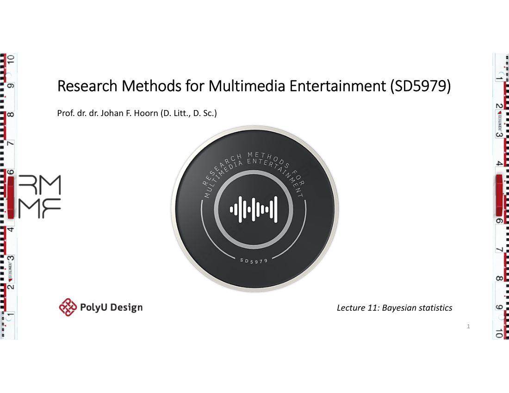
多媒体娱乐研究方法（Research Methods for Multimedia Entertainment, SD5979）
Prof. dr. dr. Johan F. Hoorn (D. Litt., D. Sc.)
第 11 讲：贝叶斯统计（Bayesian statistics）
英文检索原文（公式与版式请看左侧原图）
Research Methods for Multimedia Entertainment (SD5979) Prof. dr. dr. Johan F. Hoorn (D. Litt., D. Sc.) Lecture 11: Bayesian statistics 1

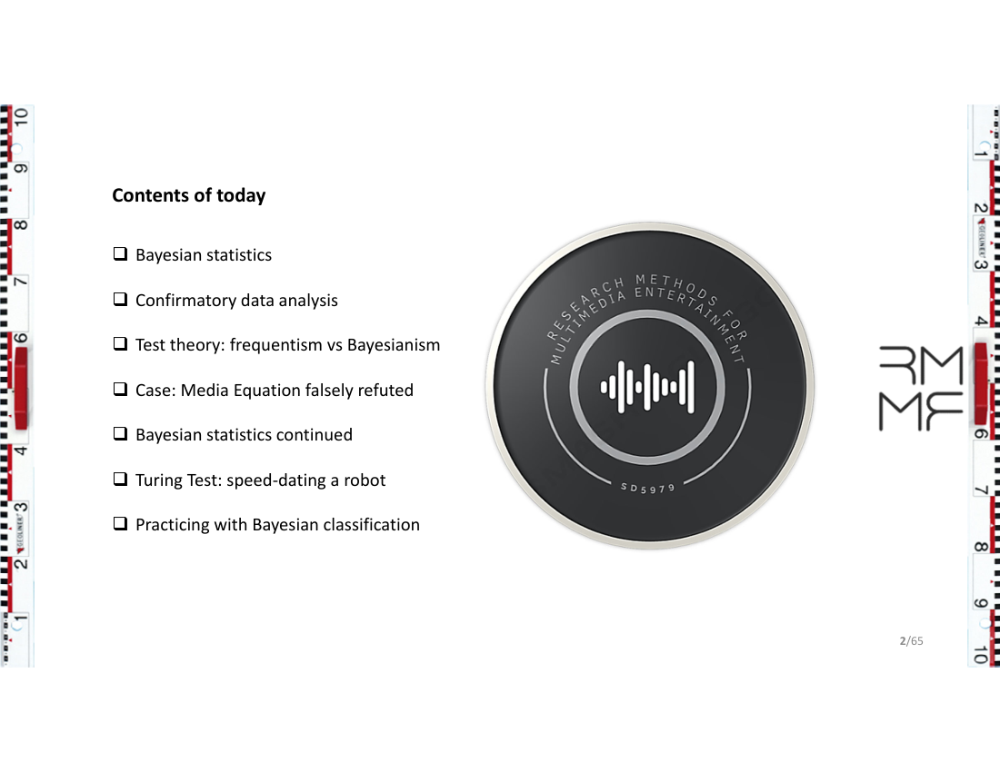
今日内容
- 贝叶斯统计（Bayesian statistics）
- 验证性数据分析（Confirmatory data analysis）
- 检验理论（Test theory）：频率主义（frequentism） vs 贝叶斯主义（Bayesianism）
- 案例：Media Equation 被错误地驳斥（Case: Media Equation falsely refuted）
- 贝叶斯统计（Bayesian statistics）（续）
- 图灵测试（Turing Test）：与机器人闪电约会（speed-dating a robot）
- 练习贝叶斯分类（Bayesian classification）
英文检索原文（公式与版式请看左侧原图）
Contents of today Bayesian statistics Confirmatory data analysis Test theory: frequentism vs Bayesianism Case: Media Equation falsely refuted Bayesian statistics continued Turing Test: speed-dating a robot Practicing with Bayesian classification 2/65

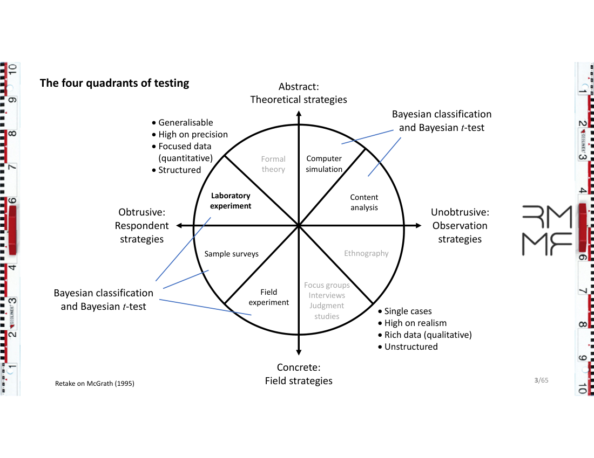
检测的四个象限（The four quadrants of testing）
- 具体（Concrete）：实地策略（Field strategies）
- 抽象（Abstract）：理论策略（Theoretical strategies）
- 侵入式（Obtrusive）：受访者策略（Respondent strategies）
- 非侵入式（Unobtrusive）：观察策略（Observation strategies）
各象限研究方法：
- 实验室实验（Laboratory experiment）
- 抽样调查（Sample surveys）
- 形式理论（Formal theory）
- 计算机模拟（Computer simulation）
- 民族志（Ethnography）
- 内容分析（Content analysis）
- 实地实验（Field experiment）
- 焦点小组（Focus groups）
- 访谈（Interviews）
- 判断研究（Judgment studies）
特征对比：
- 单个案例（Single cases）
- 高真实性（High on realism）
- 丰富数据（质性（qualitative））（Rich data）
- 非结构化（Unstructured）
- 可推广性（Generalisable）
- 高精确度（High on precision）
- 聚焦数据（量化（quantitative））（Focused data）
- 结构化（Structured）
改编自 McGrath (1995)（Retake on McGrath (1995)）
- 贝叶斯分类（Bayesian classification）与贝叶斯 t 检验（Bayesian t-test）
- 贝叶斯分类（Bayesian classification）与贝叶斯 t 检验（Bayesian t-test）
英文检索原文（公式与版式请看左侧原图）
The four quadrants of testing Concrete: Field strategies Abstract: Theoretical strategies Laboratory experiment Sample surveys Obtrusive: Respondent strategies Unobtrusive: Observation strategies Formal theory Computer simulation Ethnography Content analysis Field experiment Focus groups Interviews Judgment studies Single cases High on realism Rich data (qualitative) Unstructured Generalisable High on precision Focused data (quantitative) Structured Retake on McGrath (1995) Bayesian classification and Bayesian t-test Bayesian classification and Bayesian t-test 3/65

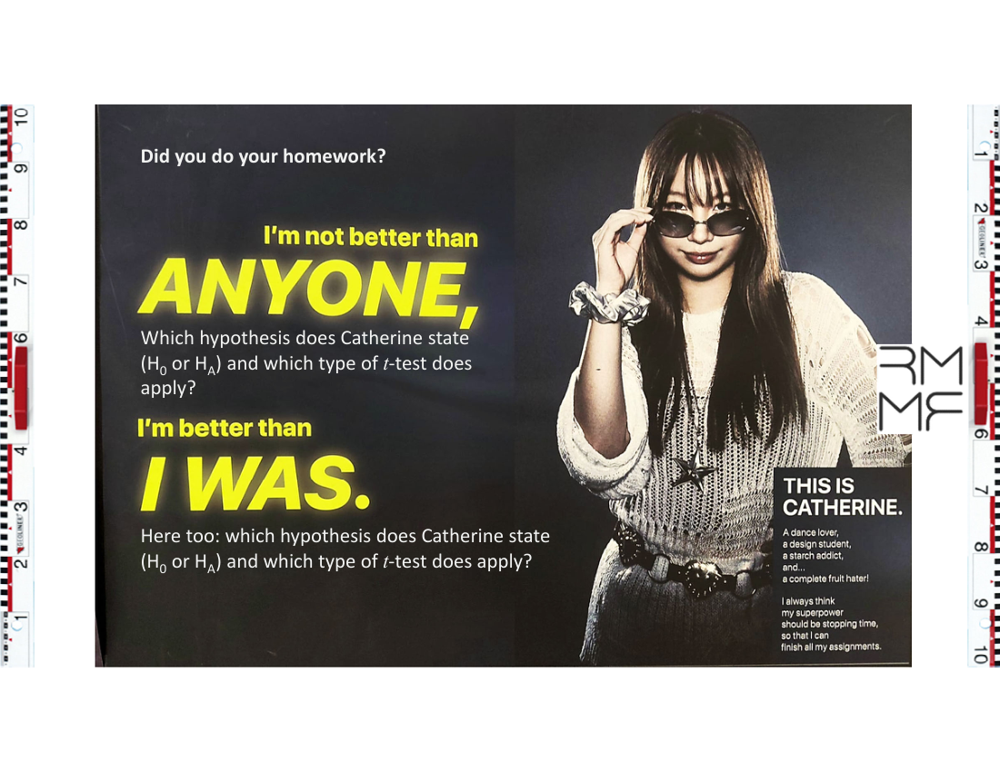
你做作业了吗？（Did you do your homework?）
Catherine 陈述的是哪一个假设（hypothesis）（零假设（H0） 还是 备择假设（HA）），以及适用哪种类型的 t 检验（t-test）？
这里也是：Catherine 陈述的是哪一个假设（hypothesis）（零假设（H0） 还是 备择假设（HA）），以及适用哪种类型的 t 检验（t-test）？
英文检索原文（公式与版式请看左侧原图）
Did you do your homework? Which hypothesis does Catherine state (H0 or HA) and which type of t-test does apply? Here too: which hypothesis does Catherine state (H0 or HA) and which type of t-test does apply?

1) 我不比任何人更好（I’m not better than anyone）
Catherine 陈述的是哪一个假设（hypothesis）（零假设（H0） 还是 备择假设（HA）），以及适用哪种类型的 t 检验（t-test）？
A. 备择假设（HA） 与配对样本（paired samples）
B. 零假设（H0） 与配对样本（paired samples）
C. 备择假设（HA） 与独立样本（independent samples）
D. 零假设（H0） 与独立样本（independent samples）
2) 我比过去的自己更好（I’m better than I was）
Catherine 陈述的是哪一个假设（hypothesis）（零假设（H0） 还是 备择假设（HA）），以及适用哪种类型的 t 检验（t-test）？
A. 备择假设（HA） 与配对样本（paired samples）
B. 零假设（H0） 与配对样本（paired samples）
C. 备择假设（HA） 与独立样本（independent samples）
D. 零假设（H0） 与独立样本（independent samples）
考试样题（类别：「应用」 / Exam Sample Item (Category “Application”)）
英文检索原文（公式与版式请看左侧原图）
1) I’m not better than anyone Which hypothesis does Catherine state (H0 or HA) and which type of t-test does apply? A HA and paired samples B H0 and paired samples C HA and independent samples D H0 and independent samples 2) I’m better than I was Which hypothesis does Catherine state (H0 or HA) and which type of t-test does apply? A HA and paired samples B H0 and paired samples C HA and independent samples D H0 and independent samples Exam Sample Item (Category “Application”) 5/65

1) 我不比任何人更好（I’m not better than anyone）
Catherine 陈述的是哪一个假设（hypothesis）（零假设（H0） 还是 备择假设（HA）），以及适用哪种类型的 t 检验（t-test）？
A. 备择假设（HA） 与配对样本（paired samples）
B. 零假设（H0） 与配对样本（paired samples）
C. 备择假设（HA） 与独立样本（independent samples）
D. 零假设（H0） 与独立样本（independent samples）
2) 我比过去的自己更好（I’m better than I was）
Catherine 陈述的是哪一个假设（hypothesis）（零假设（H0） 还是 备择假设（HA）），以及适用哪种类型的 t 检验（t-test）？
A. 备择假设（HA） 与配对样本（paired samples）
B. 零假设（H0） 与配对样本（paired samples）
C. 备择假设（HA） 与独立样本（independent samples）
D. 零假设（H0） 与独立样本（independent samples）
考试样题（类别：「应用」 / Exam Sample Item (Category “Application”)）
- 定类尺度（Nominal）？
- 定序尺度（Ordinal）？
- 定距尺度（Interval）？
- 定比尺度（Ratio）？
→ 是否允许使用 t 检验（t-test）？
英文检索原文（公式与版式请看左侧原图）
1) I’m not better than anyone Which hypothesis does Catherine state (H0 or HA) and which type of t-test does apply? A HA and paired samples B H0 and paired samples C HA and independent samples D H0 and independent samples 2) I’m better than I was Which hypothesis does Catherine state (H0 or HA) and which type of t-test does apply? A HA and paired samples B H0 and paired samples C HA and independent samples D H0 and independent samples Exam Sample Item (Category “Application”) 6/65 Nominal? Ordinal? Interval? Ratio? Is a t-test allowed?

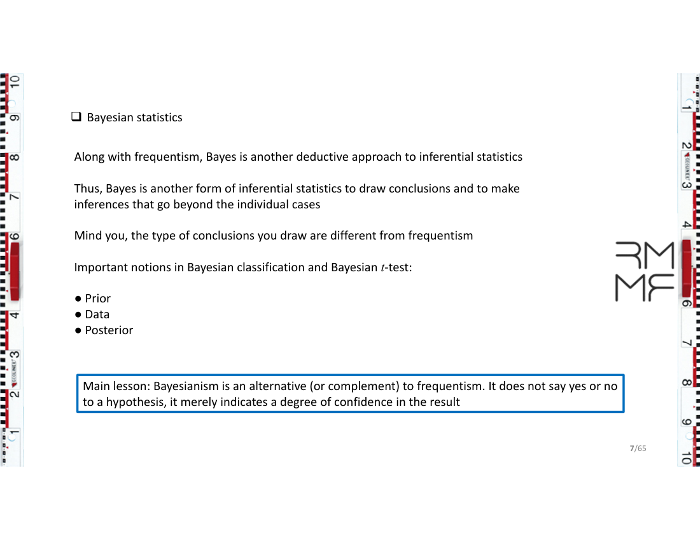
贝叶斯统计（Bayesian statistics）
核心结论（Main lesson）：贝叶斯主义（Bayesianism）是频率主义（frequentism）的替代方案（或补充）。它不对假设（hypothesis）回答「是」或「否」，而只是表明对结果的置信度（degree of confidence）。
与频率主义（frequentism）一样，贝叶斯（Bayes）也是推断统计（inferential statistics）的另一种演绎（deductive）方法
因此，贝叶斯（Bayes）是另一种形式的推断统计（inferential statistics），用于得出结论并做出超越单个案例的推断
请注意，你得出的结论类型与频率主义（frequentism）不同
贝叶斯分类（Bayesian classification）和贝叶斯 t 检验（Bayesian t-test）中的重要概念：
- 先验（Prior）
- 数据（Data）
- 后验（Posterior）
英文检索原文（公式与版式请看左侧原图）
Bayesian statistics Main lesson: Bayesianism is an alternative (or complement) to frequentism. It does not say yes or no to a hypothesis, it merely indicates a degree of confidence in the result Along with frequentism, Bayes is another deductive approach to inferential statistics Thus, Bayes is another form of inferential statistics to draw conclusions and to make inferences that go beyond the individual cases Mind you, the type of conclusions you draw are different from frequentism Important notions in Bayesian classification and Bayesian t-test: ●Prior ●Data ●Posterior 7/65

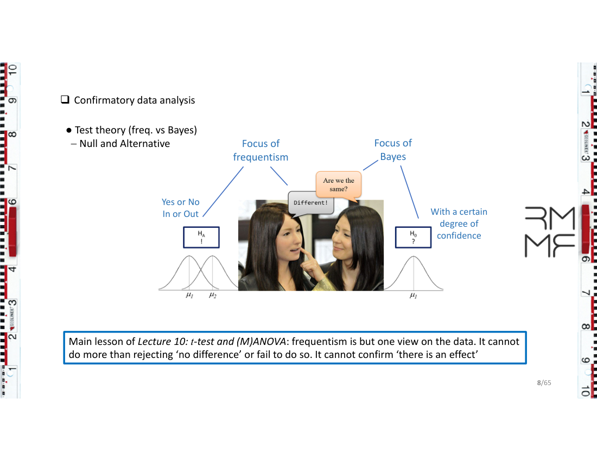
验证性数据分析（Confirmatory data analysis）
- 检验理论（Test theory）（频率主义（freq.） vs 贝叶斯（Bayes））
- 零假设（Null）与备择假设（Alternative）
第 10 讲的核心结论（Main lesson of Lecture 10）：t 检验（t-test） 和 多元/单因素方差分析（(M)ANOVA）：频率主义（frequentism）只是看待数据的一种视角。它最多只能拒绝「无差异」或未能拒绝「无差异」，而不能证实「存在效应」。
- 频率主义（frequentism）的关注点：是或否（Yes or No）／纳入或排除（In or Out）
- 贝叶斯（Bayes）的关注点：具有一定程度的置信度（degree of confidence）
英文检索原文（公式与版式请看左侧原图）
Confirmatory data analysis ●Test theory (freq. vs Bayes) Null and Alternative Main lesson of Lecture 10: t-test and (M)ANOVA: frequentism is but one view on the data. It cannot do more than rejecting ‘no difference’ or fail to do so. It cannot confirm ‘there is an effect’ Focus of frequentism Focus of Bayes Yes or No In or Out With a certain degree of confidence 8/65

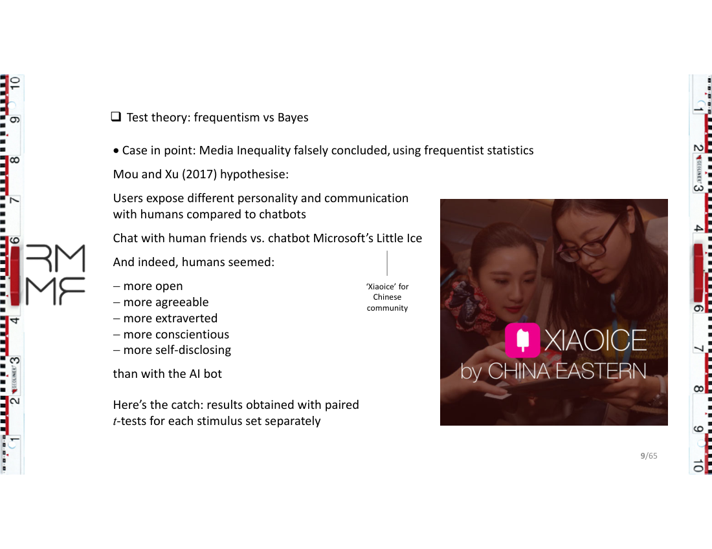
检验理论（Test theory）：频率主义（frequentism） vs 贝叶斯（Bayes）
- 典型案例：错误地得出 Media Inequality 结论，Mou 与 Xu (2017) 提出假设（hypothesise）：
与聊天机器人（chatbots）相比，用户在与人类交流时会展现出不同的性格（personality）和沟通方式
与人类朋友聊天 vs 与聊天机器人 Microsoft’s Little Ice（面向中文社区的 AI 机器人「Xiaoice」）聊天
而且结果确实显示，与 AI 机器人相比，人类似乎：
- 更开放（more open）
- 更宜人 / 随和（more agreeable）
- 更外向（more extraverted）
- 更尽责（more conscientious）
- 更愿意自我表露（more self-disclosing）
问题在于（Here’s the catch）：这些结果是使用频率主义统计（frequentist statistics），对每个刺激集（stimulus set）分别进行配对 t 检验（paired t-tests）得到的
英文检索原文（公式与版式请看左侧原图）
Case in point: Media Inequality falsely concluded, Mou and Xu (2017) hypothesise: Users expose different personality and communication with humans compared to chatbots Chat with human friends vs. chatbot Microsoft’s Little Ice And indeed, humans seemed: more open more agreeable more extraverted more conscientious more self-disclosing than with the AI bot ‘Xiaoice’ for Chinese community Test theory: frequentism vs Bayes Here’s the catch: results obtained with paired t-tests for each stimulus set separately using frequentist statistics 9/65

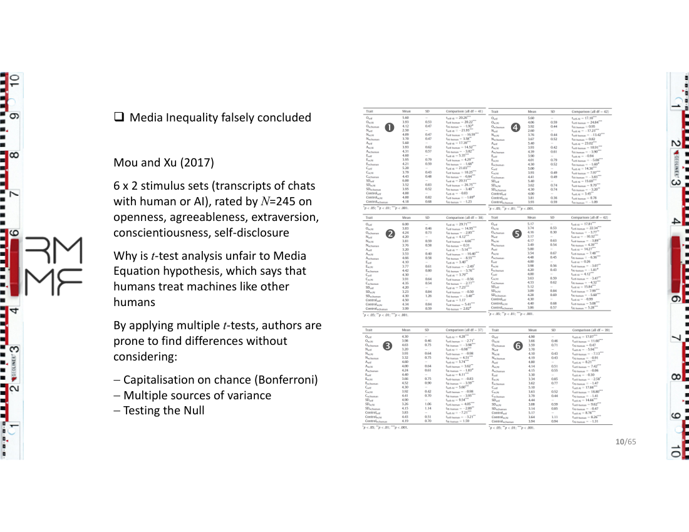
错误地得出 Media Inequality 结论（Media Inequality falsely concluded）
Mou and Xu (2017)
6 × 2 个刺激集（stimulus sets）（与人类或 AI 聊天的文字记录），由 样本量（N） = 245 名评估者对开放性（openness）、宜人性（agreeableness）、外向性（extraversion）、尽责性（conscientiousness）和自我表露（self-disclosure）进行评分
为什么 t 检验（t-test）分析对 Media Equation 假设（hypothesis）（该假设认为人类像对待其他人一样对待机器）不公平
通过应用多重 t 检验（multiple t-tests），作者很容易发现差异，却没有考虑到：
- 利用随机概率（Capitalisation on chance）（邦费罗尼校正（Bonferroni））
- 多个变异来源（Multiple sources of variance）
- 检验零假设（Testing the Null）
英文检索原文（公式与版式请看左侧原图）
Mou and Xu (2017) 6 x 2 stimulus sets (transcripts of chats with human or AI), rated by N=245 on openness, agreeableness, extraversion, conscientiousness, self-disclosure Why is t-test analysis unfair to Media Equation hypothesis, which says that humans treat machines like other humans By applying multiple t-tests, authors are prone to find differences without considering: Capitalisation on chance (Bonferroni) Multiple sources of variance Testing the Null Media Inequality falsely concluded 10/65

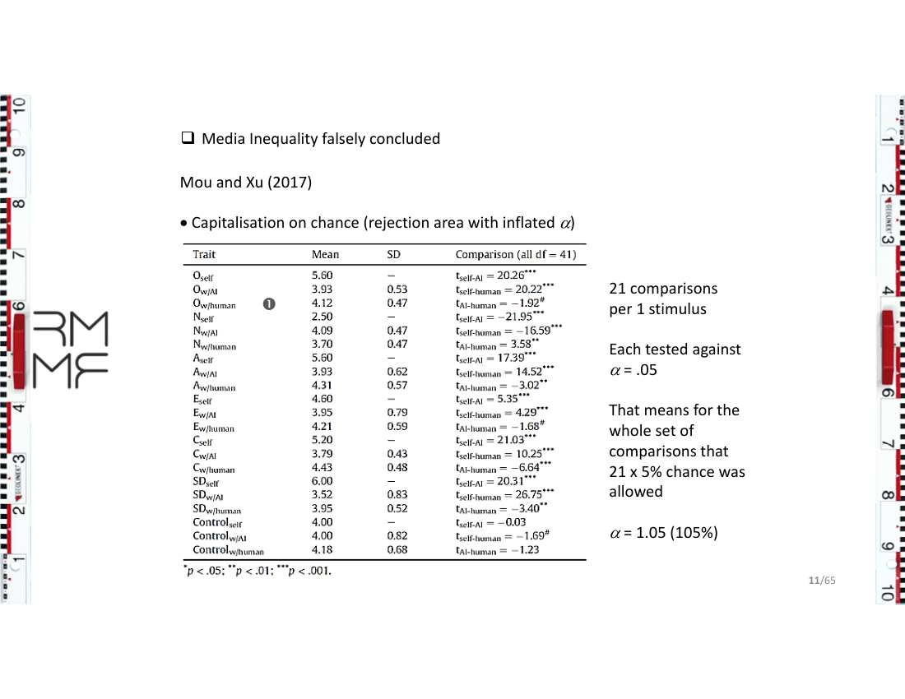
错误地得出 Media Inequality 结论（Media Inequality falsely concluded）
Mou and Xu (2017)
- 利用随机概率（Capitalisation on chance）（膨胀的 显著性水平 α（α） 导致的拒绝域（rejection area））
- 每 1 个刺激（stimulus）进行 21 次比较
- 每次检验均采用 显著性水平（α） = .05
- 这意味着对于整组比较而言，允许了 21 × 5% 的随机概率：显著性水平（α） = 1.05（105%）
英文检索原文（公式与版式请看左侧原图）
Mou and Xu (2017) Capitalisation on chance (rejection area with inflated ) Media Inequality falsely concluded 21 comparisons per 1 stimulus Each tested against = .05 That means for the whole set of comparisons that 21 x 5% chance was allowed = 1.05 (105%) 11/65

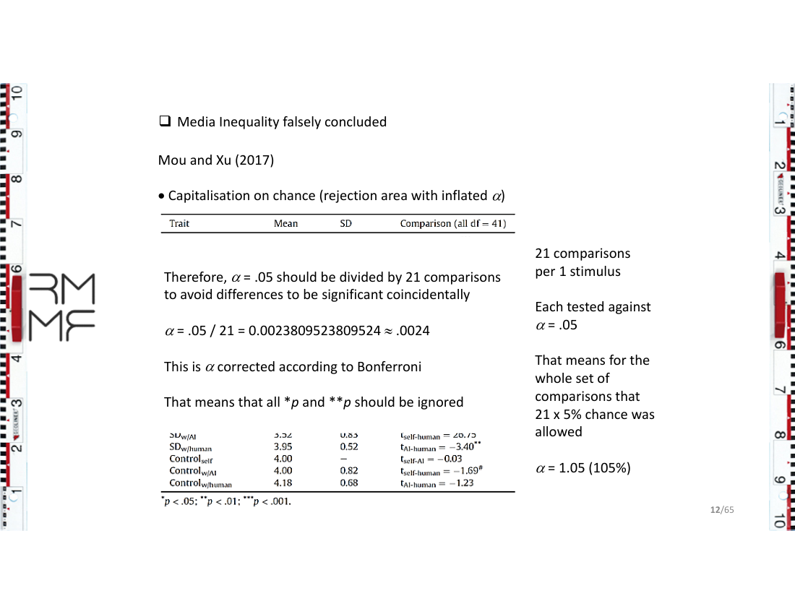
错误地得出 Media Inequality 结论（Media Inequality falsely concluded）
Mou and Xu (2017)
- 利用随机概率（Capitalisation on chance）（膨胀的 显著性水平 α（α） 导致的拒绝域（rejection area））
- 每 1 个刺激（stimulus）进行 21 次比较
- 每次检验均采用 显著性水平（α） = .05
- 这意味着对于整组比较而言，允许了 21 × 5% 的随机概率：显著性水平（α） = 1.05（105%）
因此，应当将 显著性水平（α） = .05 除以 21 次比较，以避免差异只是巧合地呈现统计显著（significant）
显著性水平（α） = .05 / 21 = 0.0023809523809524（即 .0024）
这就是根据邦费罗尼校正（Bonferroni） 得到的校正后的显著性水平（αcorrected）
这意味着所有的 *p 值（p） 和 **p 值（p） 都应该被忽略
英文检索原文（公式与版式请看左侧原图）
Mou and Xu (2017) Capitalisation on chance (rejection area with inflated ) 21 comparisons per 1 stimulus Each tested against = .05 That means for the whole set of comparisons that 21 x 5% chance was allowed = 1.05 (105%) Therefore, = .05 should be divided by 21 comparisons to avoid differences to be significant coincidentally = .05 / 21 = 0.0023809523809524 .0024 This is corrected according to Bonferroni That means that all *p and **p should be ignored Media Inequality falsely concluded 12/65

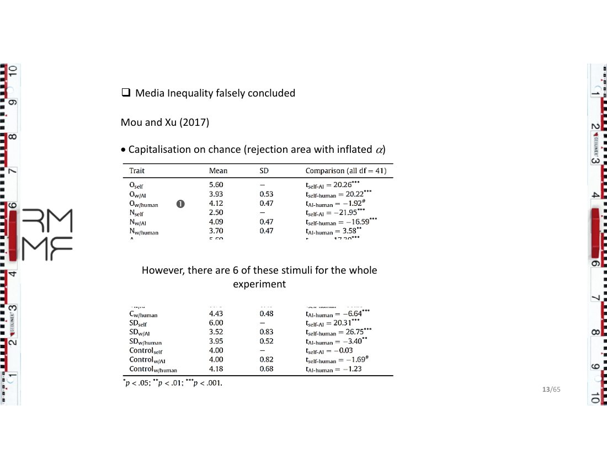
错误地得出 Media Inequality 结论（Media Inequality falsely concluded）
Mou and Xu (2017)
- 利用随机概率（Capitalisation on chance）（膨胀的 显著性水平 α（α） 导致的拒绝域（rejection area））
然而，整个实验（experiment）中共有 6 个这样的刺激（stimuli）
英文检索原文（公式与版式请看左侧原图）
Mou and Xu (2017) Capitalisation on chance (rejection area with inflated ) However, there are 6 of these stimuli for the whole experiment Media Inequality falsely concluded 13/65

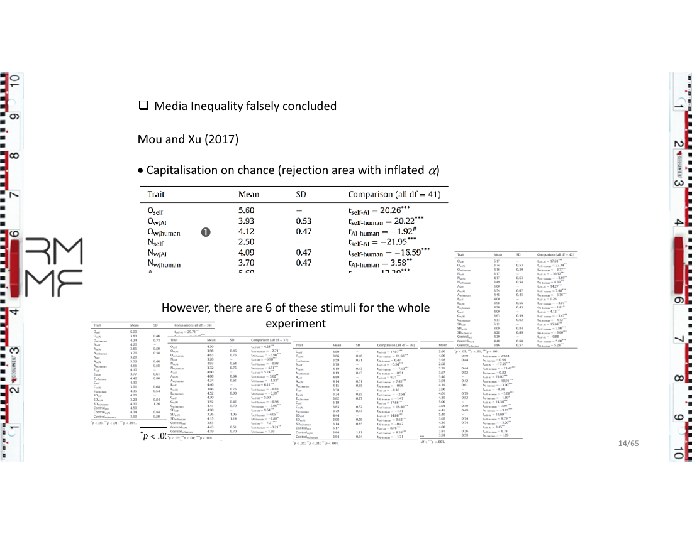
错误地得出 Media Inequality 结论（Media Inequality falsely concluded）
Mou and Xu (2017)
- 利用随机概率（Capitalisation on chance）（膨胀的 显著性水平 α（α） 导致的拒绝域（rejection area））
然而，整个实验（experiment）中共有 6 个这样的刺激（stimuli）
英文检索原文（公式与版式请看左侧原图）
Mou and Xu (2017) Capitalisation on chance (rejection area with inflated ) However, there are 6 of these stimuli for the whole experiment Media Inequality falsely concluded 14/65

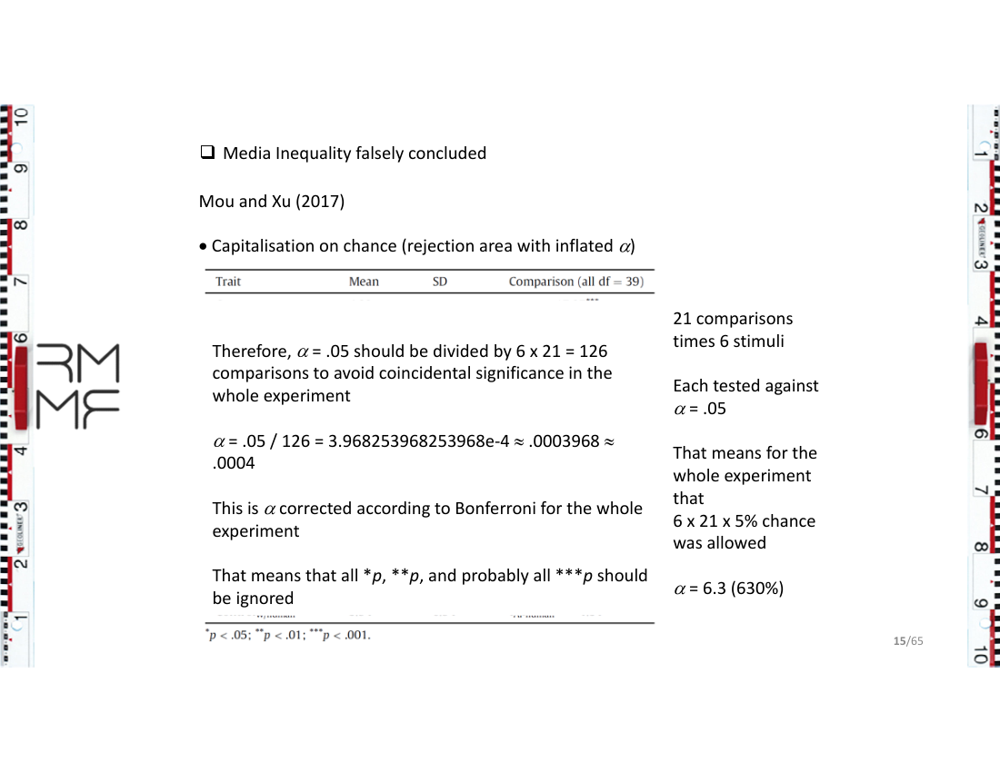
Mou and Xu (2017)
- 机遇资本化（Capitalisation on chance）（伴随膨胀的 α（inflated α） 的拒绝域（rejection area））
左侧图示说明：
- 21 次比较（comparisons） × 6 个刺激物（stimuli）
- 每次均以 α 水平（α） = .05 进行检验
- 这意味着对整个实验（experiment）而言，允许了 6 × 21 × 5% 的随机机会（chance），即 膨胀的 α（α） = 6.3（630%）
然而，整个实验（experiment）共有 6 个这样的刺激物（stimuli）
因此，应当将 α 水平（α） = .05 除以 6 × 21 = 126 次比较（comparisons），以避免整个实验（experiment）中出现偶然显著性（coincidental significance）
α = .05 / 126 = 3.968253968253968e-4 .0003968 .0004
这是根据邦费罗尼校正（Bonferroni）针对整个实验（experiment）计算出的校正后 α（αcorrected）
这意味着所有的 *p、p，甚至可能所有的 *p 都应当被忽略
- 错误地得出 Media Inequality 的结论（Media Inequality falsely concluded）
英文检索原文（公式与版式请看左侧原图）
21 comparisons times 6 stimuli Each tested against = .05 That means for the whole experiment that 6 x 21 x 5% chance was allowed = 6.3 (630%) Mou and Xu (2017) Capitalisation on chance (rejection area with inflated ) However, there are 6 of these stimuli for the whole experiment Therefore, = .05 should be divided by 6 x 21 = 126 comparisons to avoid coincidental significance in the whole experiment = .05 / 126 = 3.968253968253968e-4 .0003968 .0004 This is corrected according to Bonferroni for the whole experiment That means that all *p, **p, and probably all ***p should be ignored Media Inequality falsely concluded 15/65

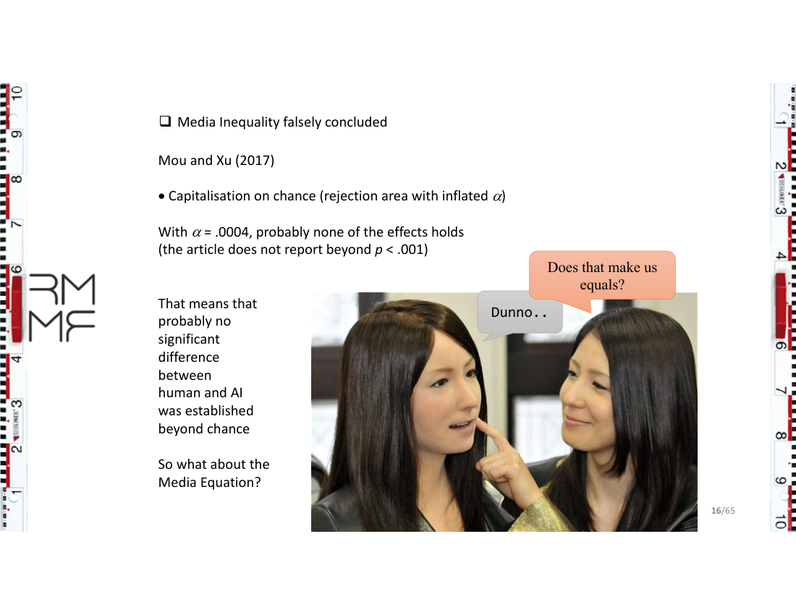
Mou and Xu (2017)
- 机遇资本化（Capitalisation on chance）（伴随膨胀的 α（inflated α） 的拒绝域（rejection area））
在 α 水平（α） = .0004 下，这些效应（effects）很可能无一成立（该文章未报告超出 p < .001 的结果）
这意味着，在排除随机机会（chance）之外，人类与 AI 之间很可能并未确立任何显著差异（significant difference）
那么 Media Equation 呢？
不知道……
这会让我们平等吗？
- 错误地得出 Media Inequality 的结论（Media Inequality falsely concluded）
英文检索原文（公式与版式请看左侧原图）
Mou and Xu (2017) Capitalisation on chance (rejection area with inflated ) With = .0004, probably none of the effects holds (the article does not report beyond p < .001) That means that probably no significant difference between human and AI was established beyond chance So what about the Media Equation? Dunno.. Does that make us equals? Media Inequality falsely concluded 16/65

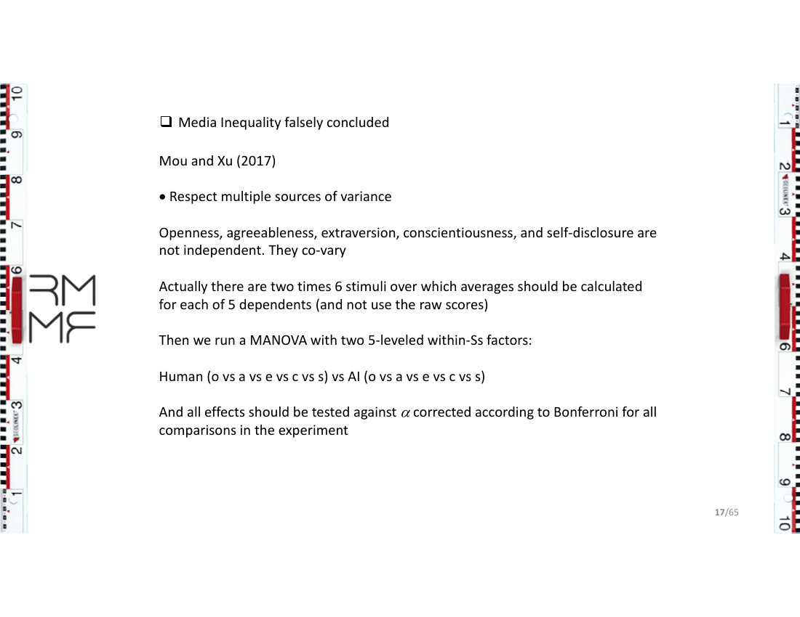
Mou and Xu (2017)
- 尊重多个变异来源（multiple sources of variance）
开放性、宜人性、外向性、尽责性与自我表露并非相互独立（independent）。它们会彼此共变（co-vary）
实际上，共有两组各 6 个刺激物（stimuli），应当分别对 5 个因变量（dependents）中的每一个计算均值（averages）（而不是使用原始分数（raw scores））
然后，我们运行一个包含两个 5 水平（5-leveled） 被试内因子（within-Ss factors） 的多元方差分析（MANOVA）：
人类（o vs a vs e vs c vs s）vs AI（o vs a vs e vs c vs s）
并且所有效应（effects）都应根据邦费罗尼校正（Bonferroni）针对实验（experiment）中所有比较（comparisons）计算出的校正后 α（αcorrected） 进行检验
- 错误地得出 Media Inequality 的结论（Media Inequality falsely concluded）
英文检索原文（公式与版式请看左侧原图）
Mou and Xu (2017) Respect multiple sources of variance Openness, agreeableness, extraversion, conscientiousness, and self-disclosure are not independent. They co-vary Actually there are two times 6 stimuli over which averages should be calculated for each of 5 dependents (and not use the raw scores) Then we run a MANOVA with two 5-leveled within-Ss factors: Human (o vs a vs e vs c vs s) vs AI (o vs a vs e vs c vs s) And all effects should be tested against corrected according to Bonferroni for all comparisons in the experiment Media Inequality falsely concluded 17/65

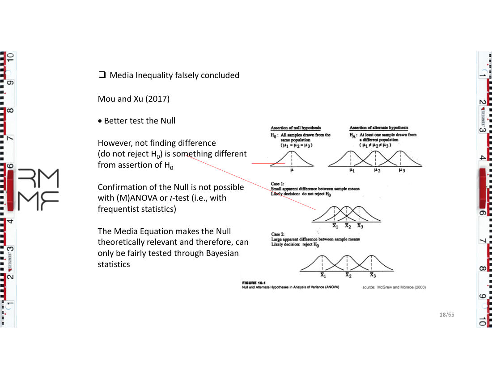
Mou and Xu (2017)
- 更好地检验零假设（the Null）
然而，未发现差异（不拒绝零假设（do not reject H0））与断言零假设成立（assertion of H0） 是两回事
使用（多元）方差分析（(M)ANOVA） 或t 检验（t-test）（即使用频率主义统计（frequentist statistics））无法实现零假设的证实（Confirmation of the Null）
Media Equation 使零假设（the Null） 在理论上具有相关性，因此只能通过贝叶斯统计（Bayesian statistics）对其进行公正的检验
- 错误地得出 Media Inequality 的结论（Media Inequality falsely concluded）
英文检索原文（公式与版式请看左侧原图）
Mou and Xu (2017) Better test the Null However, not finding difference (do not reject H0) is something different from assertion of H0 Confirmation of the Null is not possible with (M)ANOVA or t-test (i.e., with frequentist statistics) The Media Equation makes the Null theoretically relevant and therefore, can only be fairly tested through Bayesian statistics Media Inequality falsely concluded 18/65

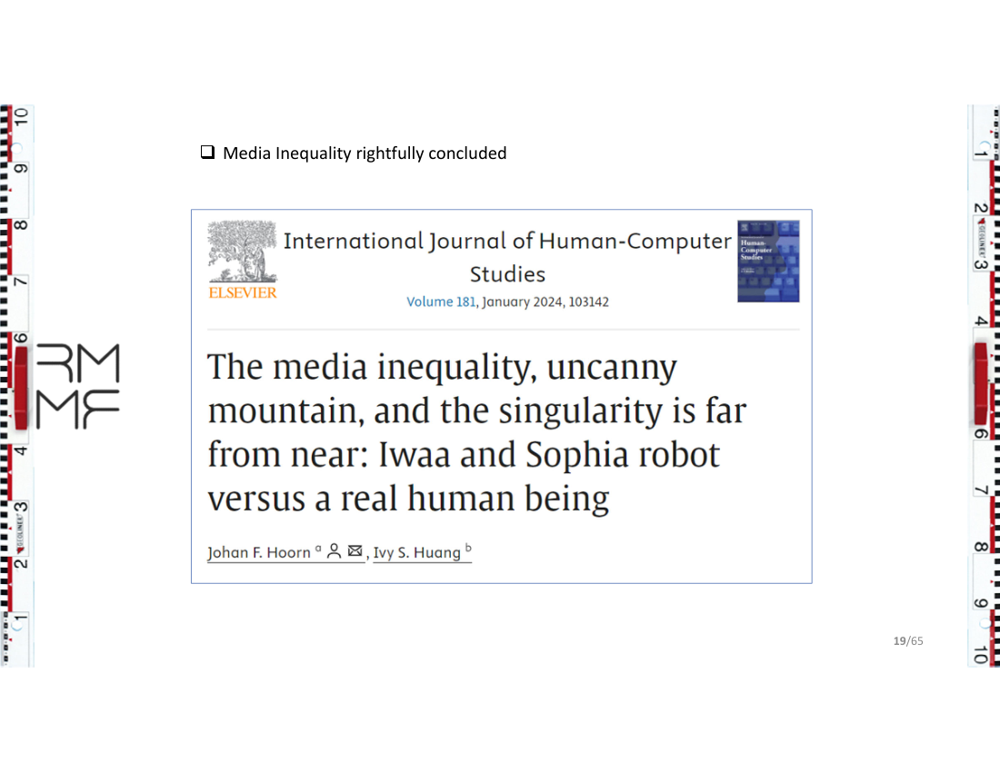
正确地得出 Media Inequality 的结论（Media Inequality rightfully concluded）
英文检索原文（公式与版式请看左侧原图）
Media Inequality rightfully concluded 19/65

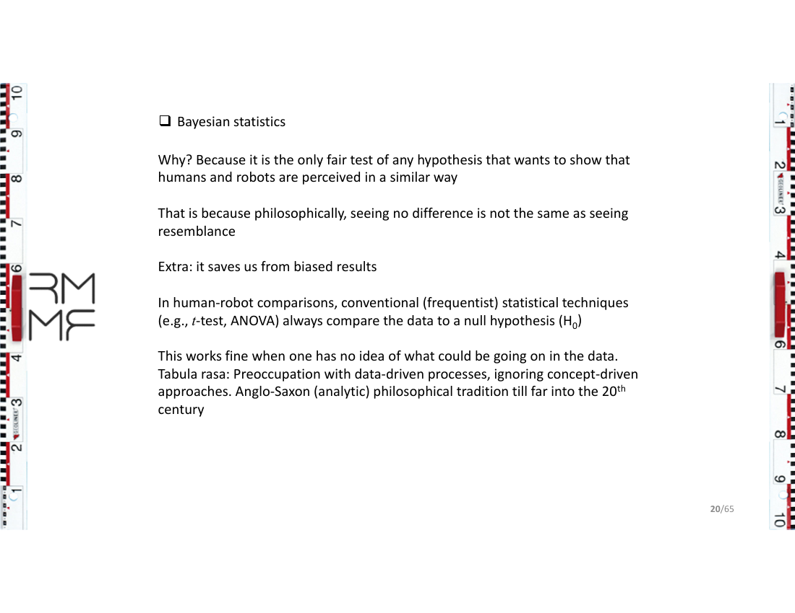
为什么？因为对于任何旨在表明人类与机器人以相似方式被感知的假设（hypothesis）而言，这是唯一公正的检验
这是因为从哲学上讲，未看到差异并不等同于看到相似性
额外好处：它使我们免于有偏结果（biased results）
在人机比较中，传统的（频率主义（frequentist））统计技术（statistical techniques）（例如t 检验（t-test）、方差分析（ANOVA））总是将数据与零假设（null hypothesis (H0)） 进行比较
当研究者对数据中可能发生的情况毫无头绪时，这种做法行之有效。白板说（Tabula rasa）：过度专注于数据驱动过程（data-driven processes），而忽视概念驱动方法（concept-driven approaches）。直到 20 世纪后期，这一直是盎格鲁-撒克逊（分析）哲学传统（Anglo-Saxon (analytic) philosophical tradition）
- 贝叶斯统计（Bayesian statistics）
英文检索原文（公式与版式请看左侧原图）
Why? Because it is the only fair test of any hypothesis that wants to show that humans and robots are perceived in a similar way That is because philosophically, seeing no difference is not the same as seeing resemblance Extra: it saves us from biased results In human-robot comparisons, conventional (frequentist) statistical techniques (e.g., t-test, ANOVA) always compare the data to a null hypothesis (H0) This works fine when one has no idea of what could be going on in the data. Tabula rasa: Preoccupation with data-driven processes, ignoring concept-driven approaches. Anglo-Saxon (analytic) philosophical tradition till far into the 20th century Bayesian statistics 20/65

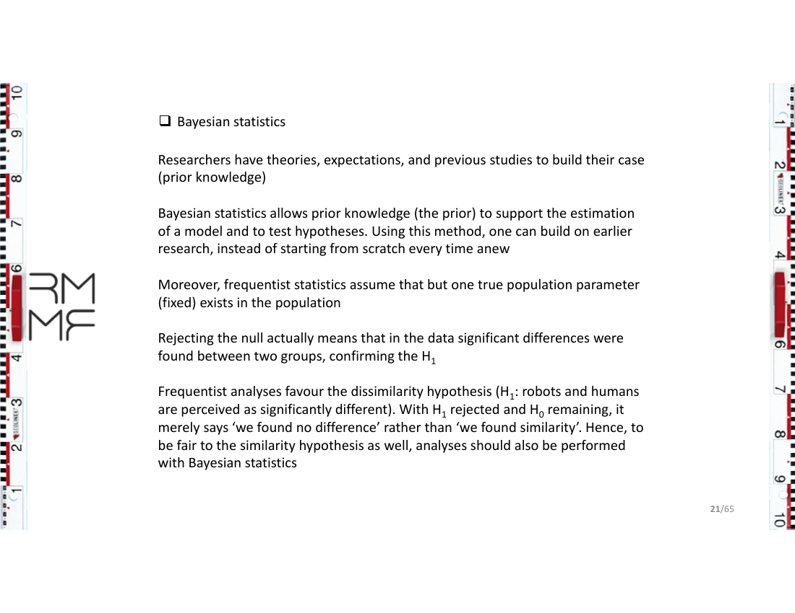
研究者拥有理论、预期以及以往研究来构建其论据（先验知识（prior knowledge））
贝叶斯统计（Bayesian statistics）允许先验知识（prior knowledge）（先验（the prior））来支持模型估计（estimation of a model）并检验假设（test hypotheses）。使用这种方法，研究者可以建立在早期研究的基础之上，而不必每次都从头开始
此外，频率主义统计（frequentist statistics）假定总体中只存在一个真实的（固定的）总体参数（population parameter）
拒绝零假设（Rejecting the null） 实际上意味着在数据中发现了两组之间的显著差异（significant differences），从而证实了备择假设（H1）
频率主义分析（Frequentist analyses）偏爱相异假设（dissimilarity hypothesis）（备择假设（H1）：机器人与人类被感知为存在显著差异）。当备择假设（H1） 被拒绝而零假设（H0） 保留时，它仅仅说明“我们未发现差异”，而不是“我们发现了相似性”。因此，为了对相似假设（similarity hypothesis）也保持公平，分析也应当采用贝叶斯统计（Bayesian statistics）来进行
- 贝叶斯统计（Bayesian statistics）
英文检索原文（公式与版式请看左侧原图）
Researchers have theories, expectations, and previous studies to build their case (prior knowledge) Bayesian statistics allows prior knowledge (the prior) to support the estimation of a model and to test hypotheses. Using this method, one can build on earlier research, instead of starting from scratch every time anew Moreover, frequentist statistics assume that but one true population parameter (fixed) exists in the population Rejecting the null actually means that in the data significant differences were found between two groups, confirming the H1 Frequentist analyses favour the dissimilarity hypothesis (H1: robots and humans are perceived as significantly different). With H1 rejected and H0 remaining, it merely says ‘we found no difference’ rather than ‘we found similarity’. Hence, to be fair to the similarity hypothesis as well, analyses should also be performed with Bayesian statistics Bayesian statistics 21/65

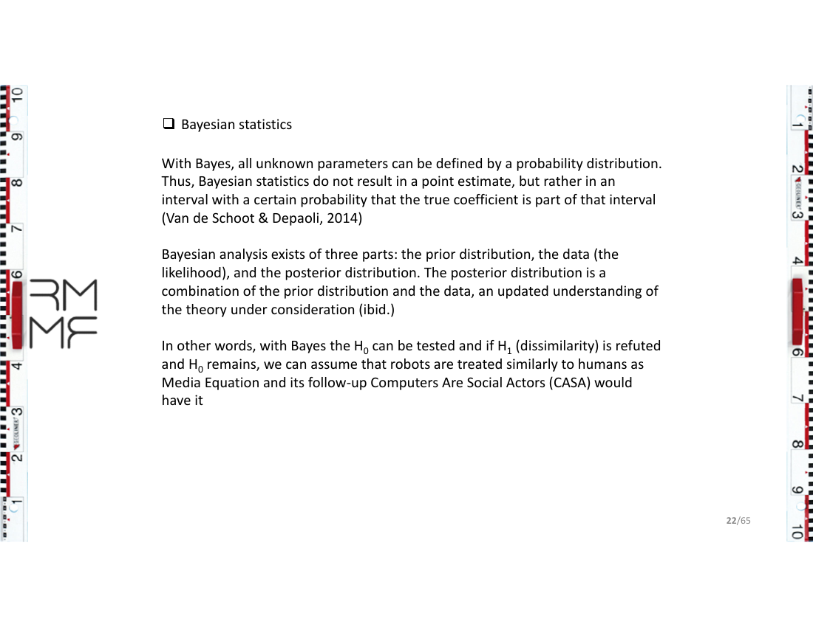
在贝叶斯方法中，所有未知参数（unknown parameters）都可以由一个概率分布（probability distribution）来定义。因此，贝叶斯统计（Bayesian statistics）得出的不是一个点估计（point estimate），而是一个带有一定概率的区间（interval），表示真实系数（true coefficient）落在该区间内（Van de Schoot & Depaoli, 2014）
贝叶斯分析（Bayesian analysis）由三部分组成：先验分布（prior distribution）、数据（似然（the likelihood））以及后验分布（posterior distribution）。后验分布（posterior distribution）是先验分布（prior distribution）与数据的结合，即对所考察理论的更新理解（同上）
换言之，借助贝叶斯方法可以检验零假设（H0）；如果备择假设（H1）（相异性）被驳斥而零假设（H0） 保留，我们便可以假定机器人受到与人类相似的对待，正如 Media Equation 及其后续理论 Computers Are Social Actors（CASA）所主张的那样
- 贝叶斯统计（Bayesian statistics）
英文检索原文（公式与版式请看左侧原图）
With Bayes, all unknown parameters can be defined by a probability distribution. Thus, Bayesian statistics do not result in a point estimate, but rather in an interval with a certain probability that the true coefficient is part of that interval (Van de Schoot & Depaoli, 2014) Bayesian analysis exists of three parts: the prior distribution, the data (the likelihood), and the posterior distribution. The posterior distribution is a combination of the prior distribution and the data, an updated understanding of the theory under consideration (ibid.) In other words, with Bayes the H0 can be tested and if H1 (dissimilarity) is refuted and H0 remains, we can assume that robots are treated similarly to humans as Media Equation and its follow-up Computers Are Social Actors (CASA) would have it Bayesian statistics 22/65

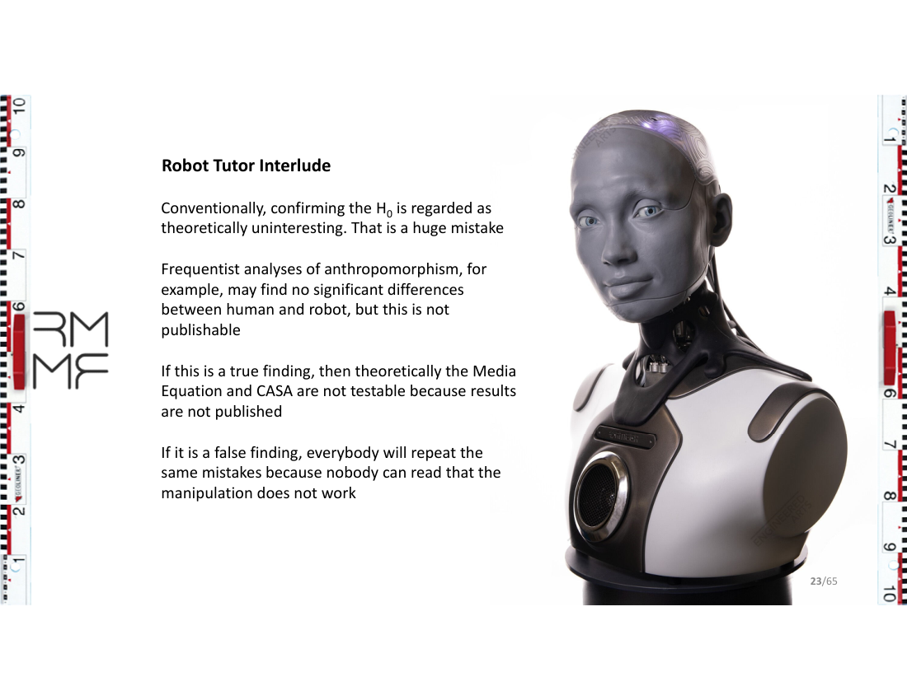
传统上，证实零假设（confirming the H0） 被认为在理论上毫无趣味。这是一个巨大的错误
例如，对拟人化（anthropomorphism）进行频率主义分析（Frequentist analyses）时，可能会发现人类与机器人之间没有显著差异（significant differences），但这样的结果是无法发表的
如果这是一个真实发现，那么从理论上讲，Media Equation 和 CASA 就成了不可检验（testable）的，因为结果无法发表
如果这是一个虚假发现，每个人都会重复同样的错误，因为没人能读到该实验操纵（manipulation）其实并不起作用
- 机器人导师插曲（Robot Tutor Interlude）
英文检索原文（公式与版式请看左侧原图）
Conventionally, confirming the H0 is regarded as theoretically uninteresting. That is a huge mistake Frequentist analyses of anthropomorphism, for example, may find no significant differences between human and robot, but this is not publishable If this is a true finding, then theoretically the Media Equation and CASA are not testable because results are not published If it is a false finding, everybody will repeat the same mistakes because nobody can read that the manipulation does not work Robot Tutor Interlude 23/65

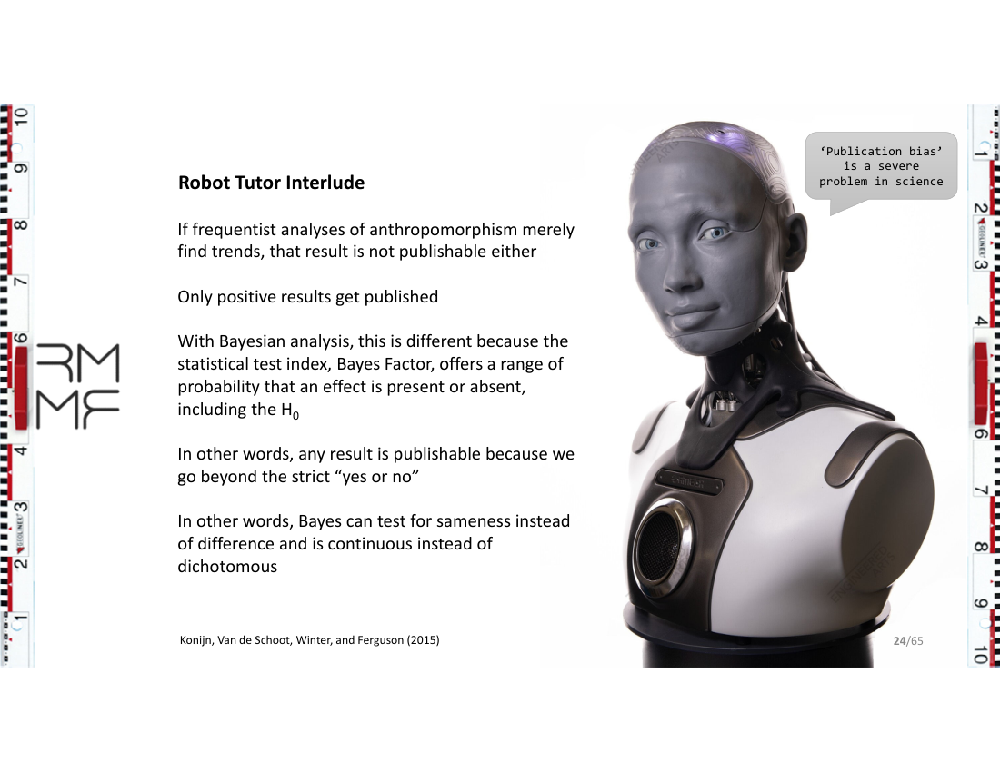
如果对拟人化（anthropomorphism）进行的频率主义分析（frequentist analyses）仅仅发现趋势（trends），该结果同样无法发表
只有阳性结果（positive results）才得以发表
而在贝叶斯分析（Bayesian analysis）中情况则不同，因为其统计检验指标（statistical test index）——贝叶斯因子（Bayes Factor）——提供了某一效应（effect）存在或不存在的概率范围，其中也包括零假设（H0）
换句话说，任何结果都是可发表的，因为我们超越了严格的“是或否”
换句话说，贝叶斯方法可以检验相同性而非差异性，并且是连续的（continuous）而非二分的（dichotomous）
“发表偏倚（Publication bias）”是科学界的一个严重问题
- 机器人导师插曲（Robot Tutor Interlude）
- Konijn, Van de Schoot, Winter, and Ferguson (2015)
英文检索原文（公式与版式请看左侧原图）
If frequentist analyses of anthropomorphism merely find trends, that result is not publishable either Only positive results get published With Bayesian analysis, this is different because the statistical test index, Bayes Factor, offers a range of probability that an effect is present or absent, including the H0 In other words, any result is publishable because we go beyond the strict “yes or no” In other words, Bayes can test for sameness instead of difference and is continuous instead of dichotomous Robot Tutor Interlude Konijn, Van de Schoot, Winter, and Ferguson (2015) ‘Publication bias’ is a severe problem in science 24/65

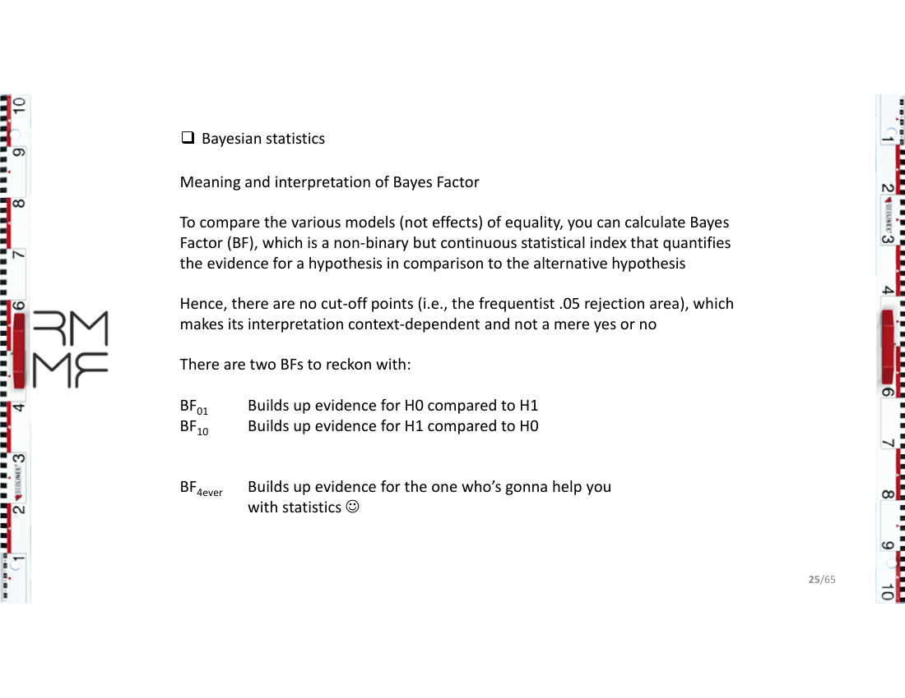
贝叶斯因子（Bayes Factor） 的含义与解释
为了比较各种关于相等性的模型（models）（而非效应（effects）），你可以计算贝叶斯因子（Bayes Factor (BF)），它是一个非二元（non-binary）而是连续统计指标（continuous statistical index），用于量化支持某一假设（hypothesis）相对于备择假设（alternative hypothesis）的证据
因此，不存在固定的截断点（cut-off points）（即频率主义（frequentist）的 .05 拒绝域（.05 rejection area）），这使得对其的解释取决于具体情境，而不只是简单的“是或否”
需要关注的两种 贝叶斯因子（BF） 如下：
- 贝叶斯因子 BF01（BF01）：累积支持零假设（H0） 相对于备择假设（H1） 的证据
- 贝叶斯因子 BF10（BF10）：累积支持备择假设（H1） 相对于零假设（H0） 的证据
- BF4ever：为那个将帮你搞定统计学的人累积证据
- 贝叶斯统计（Bayesian statistics）
英文检索原文（公式与版式请看左侧原图）
Meaning and interpretation of Bayes Factor To compare the various models (not effects) of equality, you can calculate Bayes Factor (BF), which is a non-binary but continuous statistical index that quantifies the evidence for a hypothesis in comparison to the alternative hypothesis Hence, there are no cut-off points (i.e., the frequentist .05 rejection area), which makes its interpretation context-dependent and not a mere yes or no There are two BFs to reckon with: BF01 Builds up evidence for H0 compared to H1 BF10 Builds up evidence for H1 compared to H0 BF4ever Builds up evidence for the one who’s gonna help you with statistics Bayesian statistics 25/65

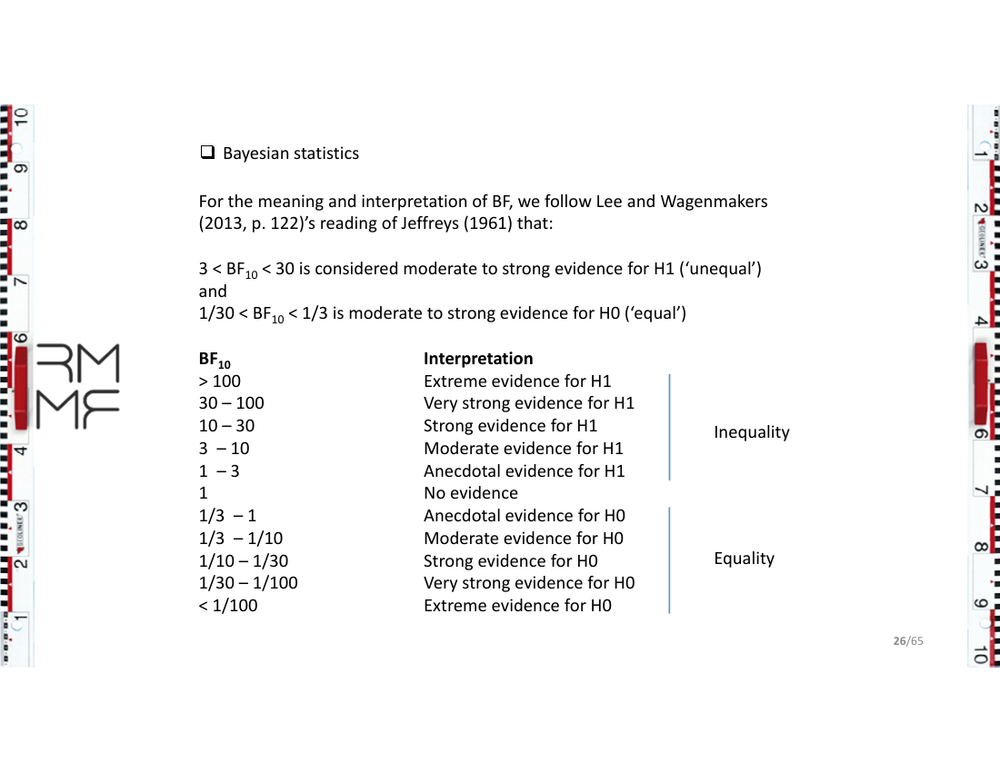
贝叶斯统计（Bayesian statistics）
关于贝叶斯因子（BF）的含义与解释，我们采用 Lee 和 Wagenmakers（2013, p. 122）对 Jeffreys（1961）的解读：
3 < BF10 < 30 被视为支持备择假设（H1）（「不相等」）的中等至强证据，而 1/30 < BF10 < 1/3 则为支持零假设（H0）（「相等」）的中等至强证据。
| 贝叶斯因子（BF10） | 解释（Interpretation） |
|---|---|
> 100 | 支持备择假设（H1）的极端证据（Extreme evidence for H1） |
30 – 100 | 支持 H1 的极强证据（Very strong evidence for H1） |
10 – 30 | 支持 H1 的强证据（Strong evidence for H1） |
3 – 10 | 支持 H1 的中等证据（Moderate evidence for H1） |
1 – 3 | 支持 H1 的轶事性证据（Anecdotal evidence）（Anecdotal evidence for H1） |
1 | 无证据（No evidence） |
1/3 – 1 | 支持零假设（H0）的轶事性证据（Anecdotal evidence）（Anecdotal evidence for H0） |
1/3 – 1/10 | 支持 H0 的中等证据（Moderate evidence for H0） |
1/10 – 1/30 | 支持 H0 的强证据（Strong evidence for H0） |
1/30 – 1/100 | 支持 H0 的极强证据（Very strong evidence for H0） |
< 1/100 | 支持 H0 的极端证据（Extreme evidence for H0） |
- 上半区间（BF10 > 1）：不相等（Inequality）
- 下半区间（BF10 < 1）：相等（Equality）
英文检索原文（公式与版式请看左侧原图）
For the meaning and interpretation of BF, we follow Lee and Wagenmakers (2013, p. 122)’s reading of Jeffreys (1961) that: 3 < BF10 < 30 is considered moderate to strong evidence for H1 (‘unequal’) and 1/30 < BF10 < 1/3 is moderate to strong evidence for H0 (‘equal’) BF10 Interpretation > 100 Extreme evidence for H1 30 – 100 Very strong evidence for H1 10 – 30 Strong evidence for H1 3 – 10 Moderate evidence for H1 1 – 3 Anecdotal evidence for H1 1 No evidence 1/3 – 1 Anecdotal evidence for H0 1/3 – 1/10 Moderate evidence for H0 1/10 – 1/30 Strong evidence for H0 1/30 – 1/100 Very strong evidence for H0 < 1/100 Extreme evidence for H0 Bayesian statistics 26/65 Inequality Equality

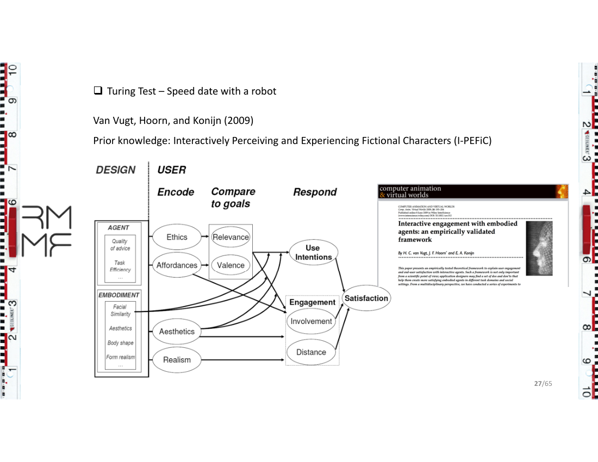
图灵测试（Turing Test） —— 与机器人快速约会
Van Vugt、Hoorn 与 Konijn（2009）
- 先验知识（Prior knowledge）：虚构角色的交互感知与体验模型（Interactively Perceiving and Experiencing Fictional Characters, I-PEFiC）
英文检索原文（公式与版式请看左侧原图）
Turing Test – Speed date with a robot Van Vugt, Hoorn, and Konijn (2009) Prior knowledge: Interactively Perceiving and Experiencing Fictional Characters (I-PEFiC) 27/65

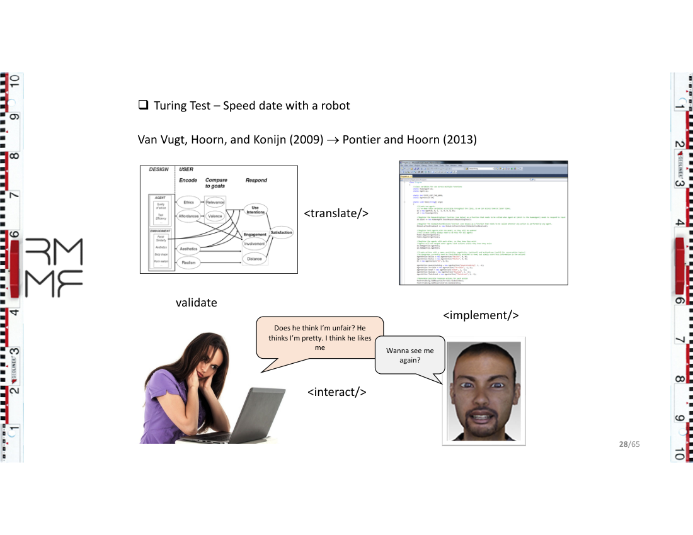
图灵测试（Turing Test） —— 与机器人快速约会
Van Vugt、Hoorn 与 Konijn（2009）→ Pontier 与 Hoorn（2013）
- 流程步骤：
- 〈转化/翻译〉（
<translate/>） - 〈实现/编码〉（
<implement/>） - 〈交互〉（
<interact/>） - 验证（validate）
- 〈转化/翻译〉（
- 对话气泡：
- “他觉得我不公平吗？他觉得我很漂亮。我觉得他喜欢我”
- “还想再见我吗？”
英文检索原文（公式与版式请看左侧原图）
Van Vugt, Hoorn, and Konijn (2009) Pontier and Hoorn (2013) <translate/> <implement/> <interact/> validate Does he think I’m unfair? He thinks I’m pretty. I think he likes me Wanna see me again? Turing Test – Speed date with a robot 28/65

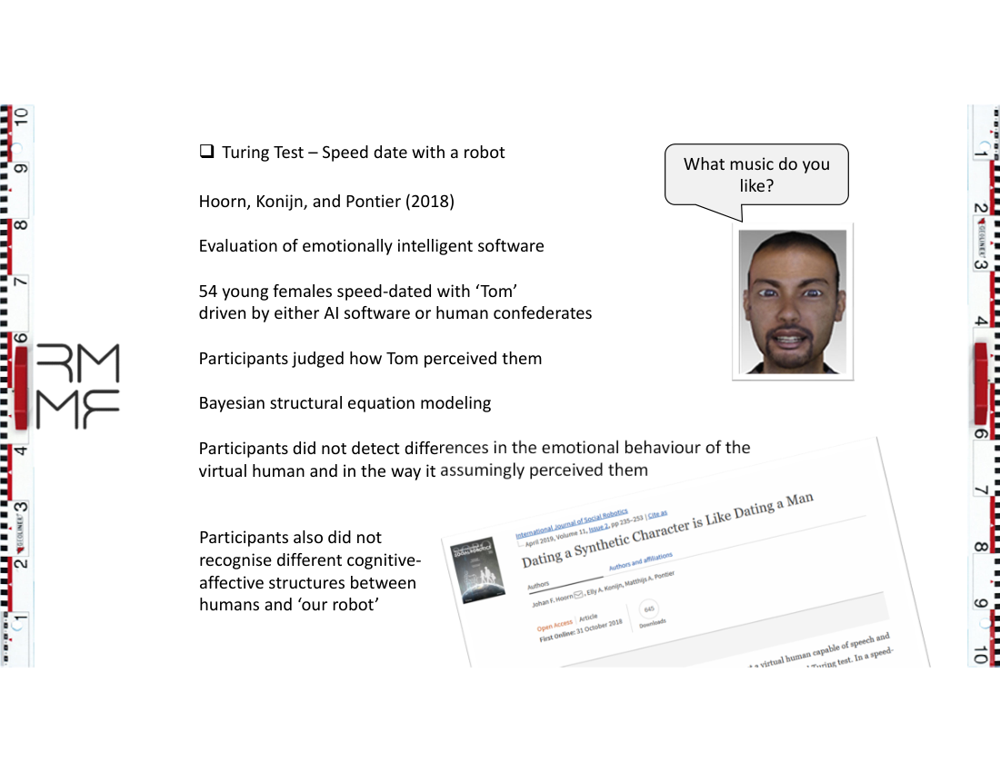
图灵测试（Turing Test） —— 与机器人快速约会
Hoorn、Konijn 与 Pontier（2018）
- 情感智能软件的评估
- 54 名年轻女性与「Tom」进行快速约会
- 「Tom」由 AI 软件或人类实验协作者（human confederates）驱动
- 被试（Participants）判断 Tom 如何看待她们
- 贝叶斯结构方程建模（Bayesian structural equation modeling）
- 被试（Participants）未能察觉虚拟人在情感行为及其（假定）对她们的感知方式上的差异
- 被试（Participants）也未能识别出人类与「我们的机器人」在认知—情感结构（cognitive-affective structures）上的不同
- 对话气泡：“你喜欢什么音乐？”
英文检索原文（公式与版式请看左侧原图）
29 Hoorn, Konijn, and Pontier (2018) Evaluation of emotionally intelligent software 54 young females speed-dated with ‘Tom’ driven by either AI software or human confederates Participants judged how Tom perceived them Bayesian structural equation modeling Participants did not detect differences in the emotional behaviour of the virtual human and in the way it assumingly perceived them Participants also did not recognise different cognitive- affective structures between humans and ‘our robot’ What music do you like? Turing Test – Speed date with a robot

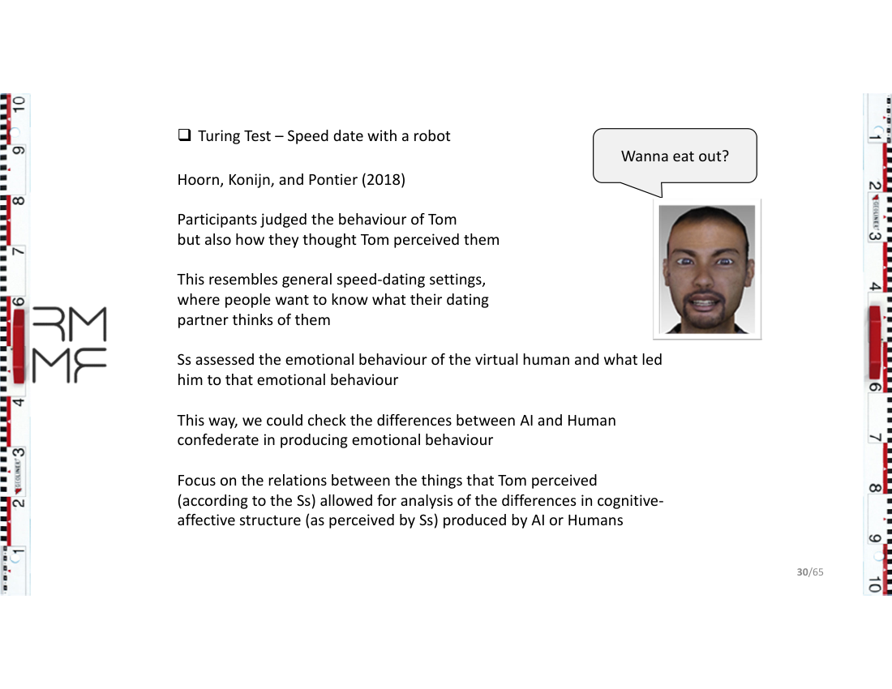
图灵测试（Turing Test） —— 与机器人快速约会
Hoorn、Konijn 与 Pontier（2018）
- 被试（Participants）不仅评判了 Tom 的行为，也评判了她们认为 Tom 如何看待她们
- 这类似于一般的快速约会情境——人们想知道约会对象对自己的看法
- 被试（Ss） 评估了虚拟人的情感行为，以及是什么促成了他的这种情感行为
- 借此，我们可以检验 AI 与人类实验协作者（Human confederate）在产生情感行为方面的差异
- 聚焦于（被试（Ss） 所认为的）Tom 感知到的各要素之间的关系，使我们能够分析由 AI 或人类产生的（被试（Ss） 所感知的）认知—情感结构（cognitive-affective structure）差异
- 对话气泡：“想出去吃饭吗？”
英文检索原文（公式与版式请看左侧原图）
Hoorn, Konijn, and Pontier (2018) Participants judged the behaviour of Tom but also how they thought Tom perceived them This resembles general speed-dating settings, where people want to know what their dating partner thinks of them Ss assessed the emotional behaviour of the virtual human and what led him to that emotional behaviour This way, we could check the differences between AI and Human confederate in producing emotional behaviour Focus on the relations between the things that Tom perceived (according to the Ss) allowed for analysis of the differences in cognitive- affective structure (as perceived by Ss) produced by AI or Humans Wanna eat out? Turing Test – Speed date with a robot 30/65

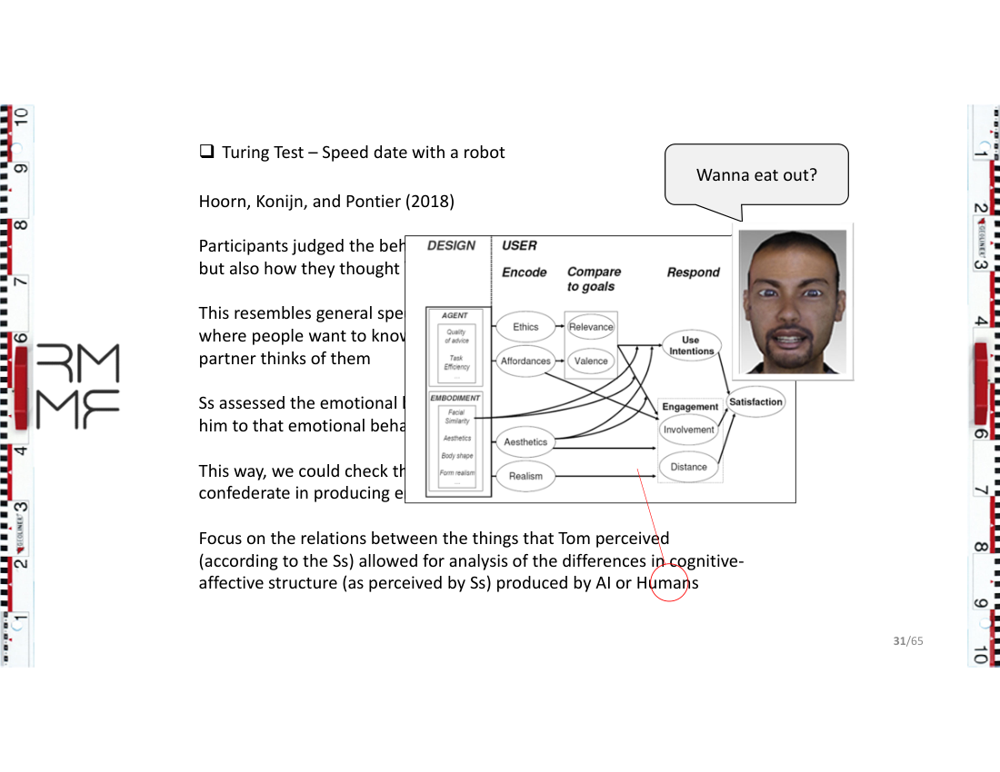
图灵测试（Turing Test） —— 与机器人快速约会
Hoorn、Konijn 与 Pontier（2018）
- 被试（Participants）不仅评判了 Tom 的行为，也评判了她们认为 Tom 如何看待她们
- 这类似于一般的快速约会情境——人们想知道约会对象对自己的看法
- 被试（Ss） 评估了虚拟人的情感行为，以及是什么促成了他的这种情感行为
- 借此，我们可以检验 AI 与人类实验协作者（Human confederate）在产生情感行为方面的差异
- 聚焦于（被试（Ss） 所认为的）Tom 感知到的各要素之间的关系，使我们能够分析由 AI 或人类产生的（被试（Ss） 所感知的）认知—情感结构（cognitive-affective structure）差异
- 对话气泡：“想出去吃饭吗？”
英文检索原文（公式与版式请看左侧原图）
Hoorn, Konijn, and Pontier (2018) Participants judged the behaviour of Tom but also how they thought Tom perceived them This resembles general speed-dating settings, where people want to know what their dating partner thinks of them Ss assessed the emotional behaviour of the virtual human and what led him to that emotional behaviour This way, we could check the differences between AI and Human confederate in producing emotional behaviour Focus on the relations between the things that Tom perceived (according to the Ss) allowed for analysis of the differences in cognitive- affective structure (as perceived by Ss) produced by AI or Humans Wanna eat out? Turing Test – Speed date with a robot 31/65

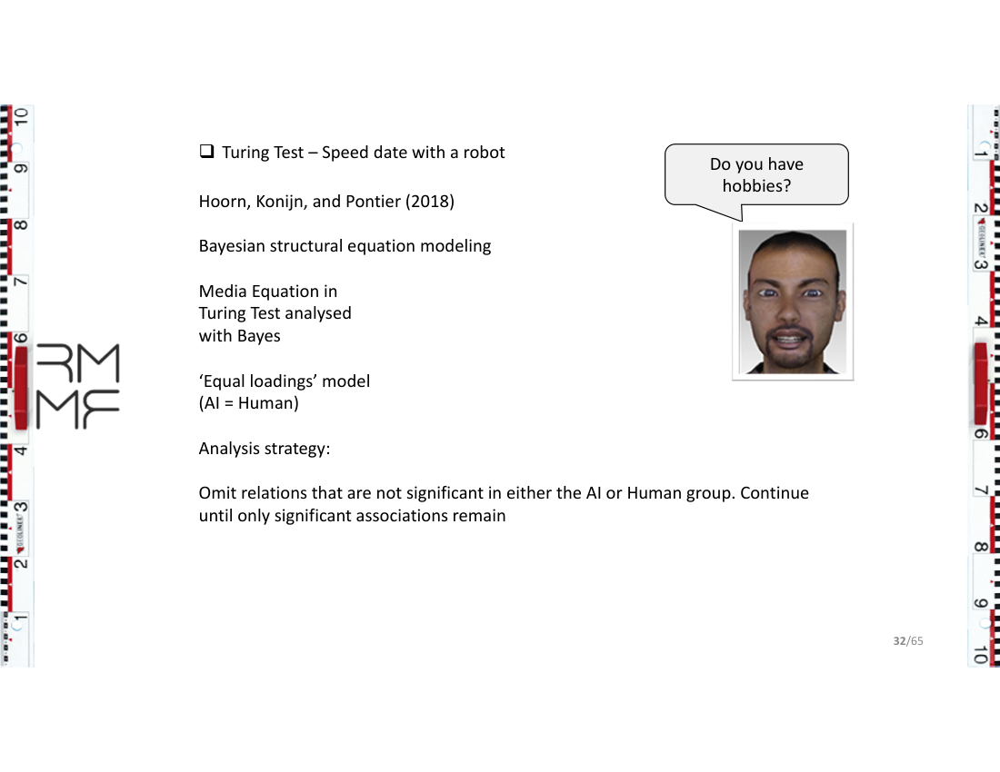
图灵测试（Turing Test） —— 与机器人快速约会
Hoorn、Konijn 与 Pontier（2018）
- 贝叶斯结构方程建模（Bayesian structural equation modeling）
- 采用贝叶斯方法（Bayes）分析图灵测试（Turing Test）中的媒介等同理论（Media Equation）
- 「等载荷（Equal loadings）」模型（AI = Human）
- 分析策略：剔除在 AI 组和人类组中均不显著（significant）的关系；持续该过程，直至仅保留显著关联（significant associations）
- 对话气泡：“你有什么爱好吗？”
英文检索原文（公式与版式请看左侧原图）
Hoorn, Konijn, and Pontier (2018) Bayesian structural equation modeling Media Equation in Turing Test analysed with Bayes ‘Equal loadings’ model (AI = Human) Analysis strategy: Omit relations that are not significant in either the AI or Human group. Continue until only significant associations remain Do you have hobbies? Turing Test – Speed date with a robot 32/65

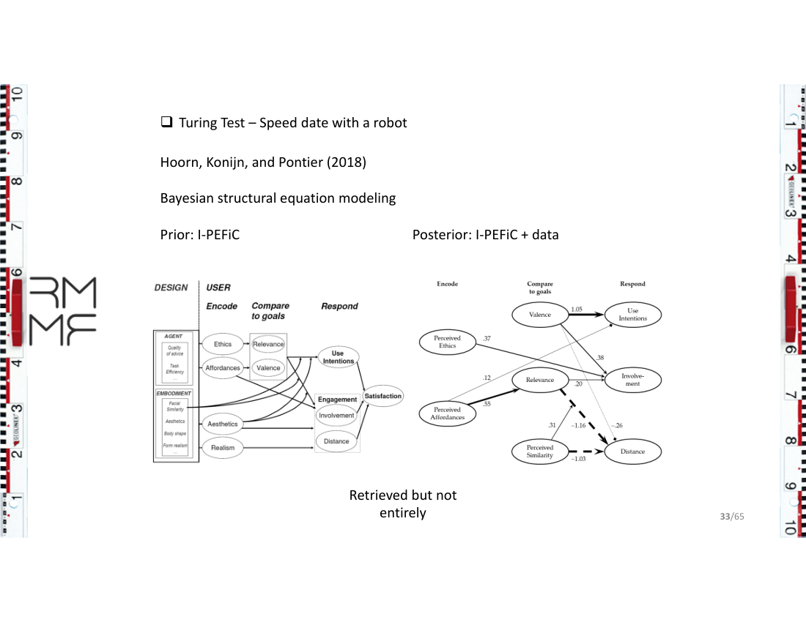
图灵测试（Turing Test） —— 与机器人快速约会
Hoorn、Konijn 与 Pontier（2018）
- 贝叶斯结构方程建模（Bayesian structural equation modeling）
- 先验（Prior）：I-PEFiC
- 后验（Posterior）：I-PEFiC + 数据（data）
- 图示标注：复现（检索还原）了，但并不完全（Retrieved but not entirely）
英文检索原文（公式与版式请看左侧原图）
Hoorn, Konijn, and Pontier (2018) Bayesian structural equation modeling Prior: I-PEFiC Posterior: I-PEFiC + data Retrieved but not entirely Turing Test – Speed date with a robot 33/65

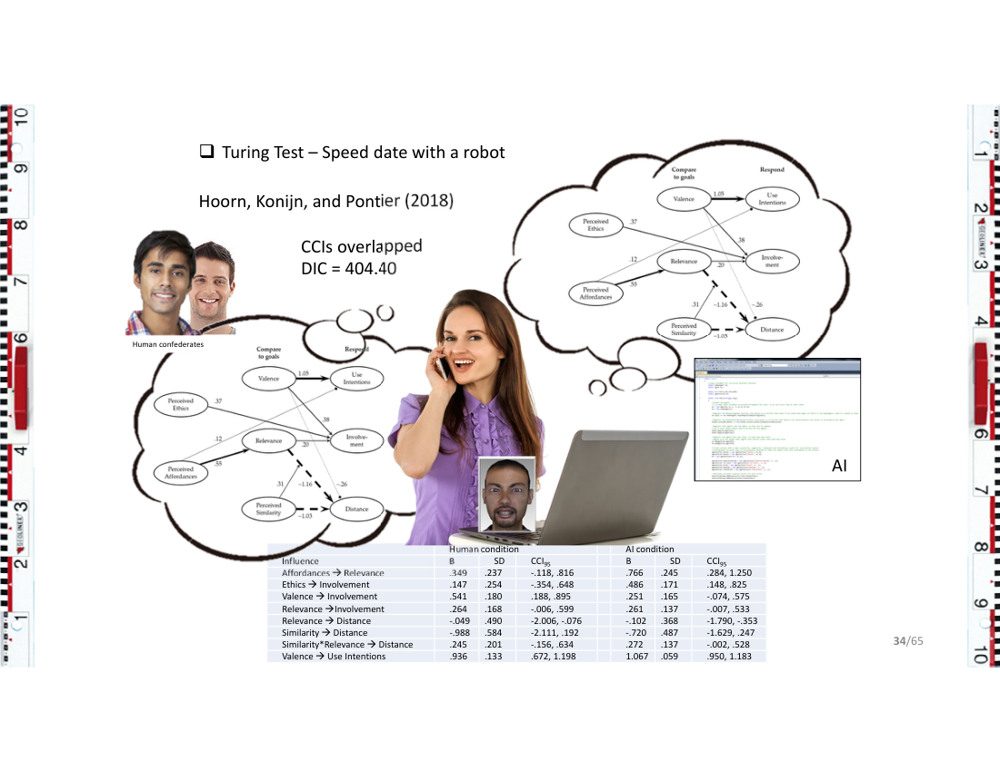
图灵测试（Turing Test） —— 与机器人快速约会
Hoorn、Konijn 与 Pontier（2018）
| 影响路径（Influence） | 人类条件 回归系数（B） | 人类条件 标准差（SD） | 人类条件 95% 中心可信区间（CCI95） | AI 条件 回归系数（B） | AI 条件 标准差（SD） | AI 条件 95% 中心可信区间（CCI95） |
|---|---|---|---|---|---|---|
| 可供性 → 相关性（Affordances Relevance） | .349 | .237 | -.118, .816 | .766 | .245 | .284, 1.250 |
| 伦理 → 卷入度（Ethics Involvement） | .147 | .254 | -.354, .648 | .486 | .171 | .148, .825 |
| 效价 → 卷入度（Valence Involvement） | .541 | .180 | .188, .895 | .251 | .165 | -.074, .575 |
| 相关性 → 卷入度（Relevance Involvement） | .264 | .168 | -.006, .599 | .261 | .137 | -.007, .533 |
| 相关性 → 距离（Relevance Distance） | -.049 | .490 | -2.006, -.076 | -.102 | .368 | -1.790, -.353 |
| 相似性 → 距离（Similarity Distance） | -.988 | .584 | -2.111, .192 | -.720 | .487 | -1.629, .247 |
| 相似性×相关性 → 距离（Similarity*Relevance Distance） | .245 | .201 | -.156, .634 | .272 | .137 | -.002, .528 |
| 效价 → 使用意向（Valence Use Intentions） | .936 | .133 | .672, 1.198 | 1.067 | .059 | .950, 1.183 |
- 条件说明：人类实验协作者（Human confederates）（Human condition） vs. AI（AI condition）
- 结果备注：中心可信区间（CCIs） 重叠（CCIs overlapped）
- 模型拟合度：偏差信息准则（DIC） = 404.40
英文检索原文（公式与版式请看左侧原图）
Human condition AI condition Influence B SD CCI95 B SD CCI95 Affordances Relevance .349 .237 -.118, .816 .766 .245 .284, 1.250 Ethics Involvement .147 .254 -.354, .648 .486 .171 .148, .825 Valence Involvement .541 .180 .188, .895 .251 .165 -.074, .575 Relevance Involvement .264 .168 -.006, .599 .261 .137 -.007, .533 Relevance Distance -.049 .490 -2.006, -.076 -.102 .368 -1.790, -.353 Similarity Distance -.988 .584 -2.111, .192 -.720 .487 -1.629, .247 Similarity*Relevance Distance .245 .201 -.156, .634 .272 .137 -.002, .528 Valence Use Intentions .936 .133 .672, 1.198 1.067 .059 .950, 1.183 Human confederates CCIs overlapped DIC = 404.40 Hoorn, Konijn, and Pontier (2018) AI Turing Test – Speed date with a robot 34/65

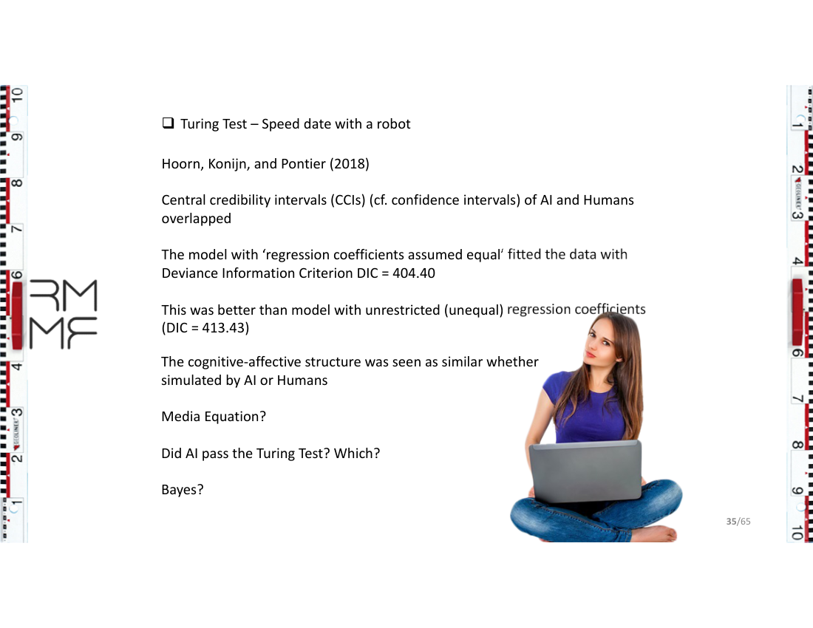
图灵测试（Turing Test） —— 与机器人快速约会
Hoorn、Konijn 与 Pontier（2018）
- AI 与人类的中心可信区间（Central credibility intervals, CCIs）（类似于置信区间（confidence intervals））存在重叠
- 「假定回归系数（regression coefficients）相等」的模型对数据的拟合度为偏差信息准则（Deviance Information Criterion, DIC） = 404.40
- 该模型优于无约束（不等）回归系数（regression coefficients）的模型（DIC = 413.43）
- 无论是由 AI 还是人类模拟，人们所感知到的认知—情感结构（cognitive-affective structure）都被视为相似的
- 媒介等同理论（Media Equation）？
- AI 是否通过了图灵测试（Turing Test）？通过了哪一种？
- 贝叶斯方法（Bayes）？
英文检索原文（公式与版式请看左侧原图）
Hoorn, Konijn, and Pontier (2018) Central credibility intervals (CCIs) (cf. confidence intervals) of AI and Humans overlapped The model with ‘regression coefficients assumed equal’ fitted the data with Deviance Information Criterion DIC = 404.40 This was better than model with unrestricted (unequal) regression coefficients (DIC = 413.43) The cognitive-affective structure was seen as similar whether simulated by AI or Humans Media Equation? Did AI pass the Turing Test? Which? Bayes? Turing Test – Speed date with a robot 35/65

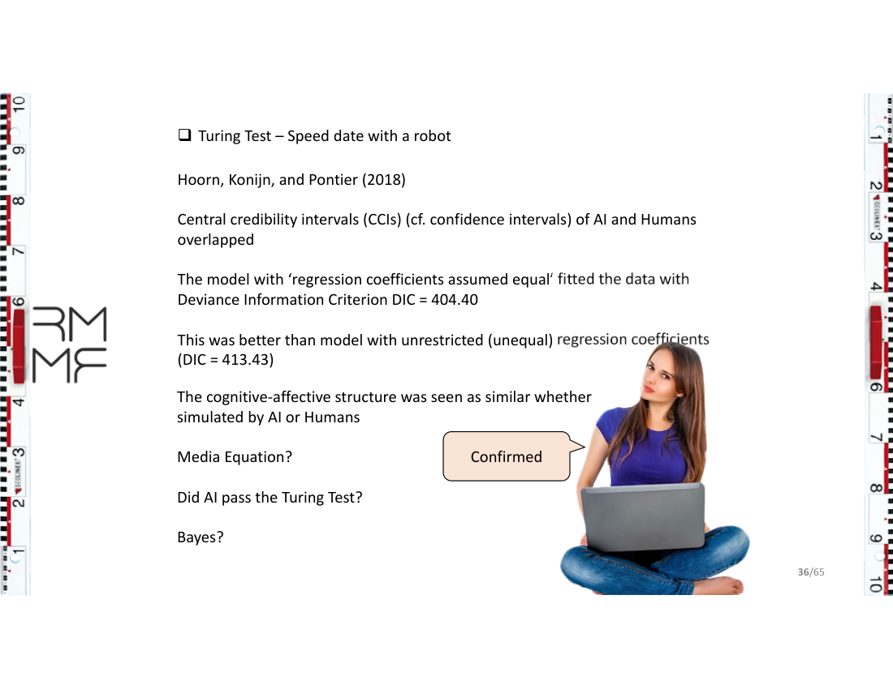
图灵测试（Turing Test） —— 与机器人快速约会
Hoorn、Konijn 与 Pontier（2018）
- AI 与人类的中心可信区间（Central credibility intervals, CCIs）（类似于置信区间（confidence intervals））存在重叠
- 「假定回归系数（regression coefficients）相等」的模型对数据的拟合度为偏差信息准则（Deviance Information Criterion, DIC） = 404.40
- 该模型优于无约束（不等）回归系数（regression coefficients）的模型（DIC = 413.43）
- 无论是由 AI 还是人类模拟，人们所感知到的认知—情感结构（cognitive-affective structure）都被视为相似的
- 媒介等同理论（Media Equation）？——已证实（Confirmed）
- AI 是否通过了图灵测试（Turing Test）？
- 贝叶斯方法（Bayes）？
英文检索原文（公式与版式请看左侧原图）
Hoorn, Konijn, and Pontier (2018) Central credibility intervals (CCIs) (cf. confidence intervals) of AI and Humans overlapped The model with ‘regression coefficients assumed equal’ fitted the data with Deviance Information Criterion DIC = 404.40 This was better than model with unrestricted (unequal) regression coefficients (DIC = 413.43) The cognitive-affective structure was seen as similar whether simulated by AI or Humans Media Equation? Did AI pass the Turing Test? Bayes? Confirmed Turing Test – Speed date with a robot 36/65

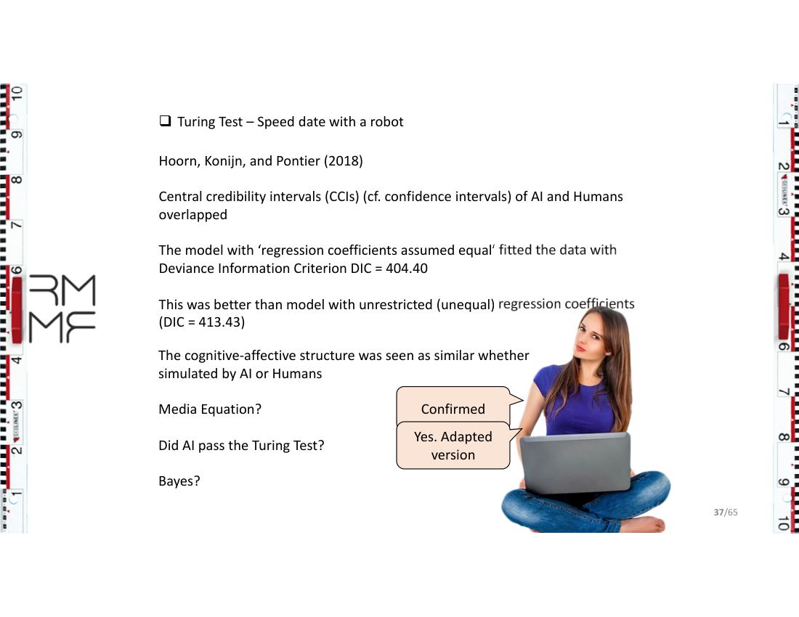
图灵测试（Turing Test） —— 与机器人快速约会
Hoorn、Konijn 与 Pontier（2018）
- AI 与人类的中心可信区间（Central credibility intervals, CCIs）（类似于置信区间（confidence intervals））存在重叠
- 「假定回归系数（regression coefficients）相等」的模型对数据的拟合度为偏差信息准则（Deviance Information Criterion, DIC） = 404.40
- 该模型优于无约束（不等）回归系数（regression coefficients）的模型（DIC = 413.43）
- 无论是由 AI 还是人类模拟，人们所感知到的认知—情感结构（cognitive-affective structure）都被视为相似的
- 媒介等同理论（Media Equation）？——已证实（Confirmed）
- AI 是否通过了图灵测试（Turing Test）？——是的。改良版本（Yes. Adapted version）
- 贝叶斯方法（Bayes）？
英文检索原文（公式与版式请看左侧原图）
Hoorn, Konijn, and Pontier (2018) Central credibility intervals (CCIs) (cf. confidence intervals) of AI and Humans overlapped The model with ‘regression coefficients assumed equal’ fitted the data with Deviance Information Criterion DIC = 404.40 This was better than model with unrestricted (unequal) regression coefficients (DIC = 413.43) The cognitive-affective structure was seen as similar whether simulated by AI or Humans Media Equation? Did AI pass the Turing Test? Bayes? Confirmed Yes. Adapted version Turing Test – Speed date with a robot 37/65

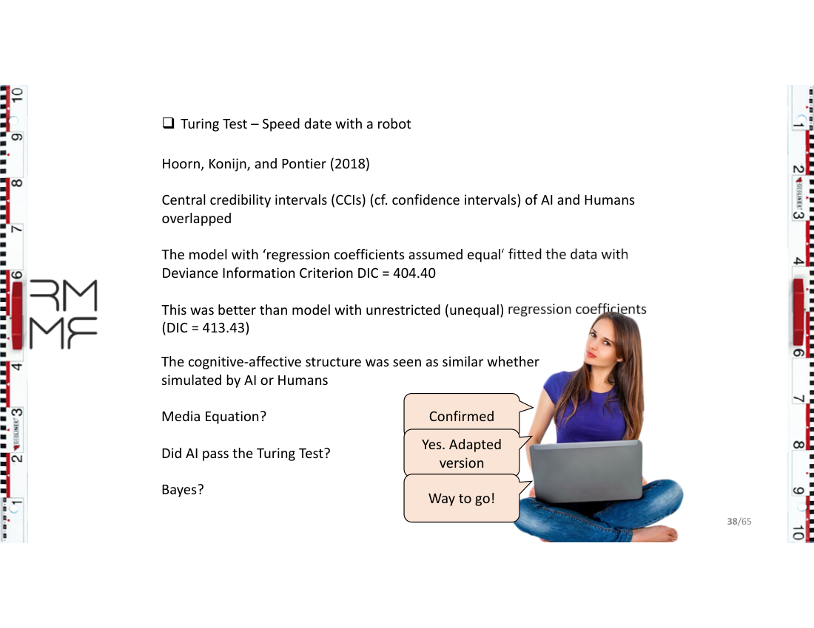
图灵测试（Turing Test） —— 与机器人快速约会
Hoorn、Konijn 与 Pontier（2018）
- AI 与人类的中心可信区间（Central credibility intervals, CCIs）（类似于置信区间（confidence intervals））存在重叠
- 「假定回归系数（regression coefficients）相等」的模型对数据的拟合度为偏差信息准则（Deviance Information Criterion, DIC） = 404.40
- 该模型优于无约束（不等）回归系数（regression coefficients）的模型（DIC = 413.43）
- 无论是由 AI 还是人类模拟，人们所感知到的认知—情感结构（cognitive-affective structure）都被视为相似的
- 媒介等同理论（Media Equation）？——已证实（Confirmed）
- AI 是否通过了图灵测试（Turing Test）？——是的。改良版本（Yes. Adapted version）
- 贝叶斯方法（Bayes）？——正是如此 / 必经之路！（Way to go!）
英文检索原文（公式与版式请看左侧原图）
Hoorn, Konijn, and Pontier (2018) Central credibility intervals (CCIs) (cf. confidence intervals) of AI and Humans overlapped The model with ‘regression coefficients assumed equal’ fitted the data with Deviance Information Criterion DIC = 404.40 This was better than model with unrestricted (unequal) regression coefficients (DIC = 413.43) The cognitive-affective structure was seen as similar whether simulated by AI or Humans Media Equation? Did AI pass the Turing Test? Bayes? Confirmed Yes. Adapted version Way to go! Turing Test – Speed date with a robot 38/65

考试样题（Exam Sample Item）
类别：“应用”（Category “Application”）
Edwards、Edwards、Spence 与 Shelton（2014）运行了多变量方差分析（MANOVA），发现人类与 Twitter 机器人之间没有显著差异（significant differences）。他们得出结论：Twitter 机器人在沟通方面与人类一样可信、有吸引力且高效。
这个结论存在什么问题？
A. 他们没有校正 α 水平（α），从而利用了偶然性（capitalised on chance）
B. 他们没有将数据（data）与零假设（Null (H0)）进行比较
C. 在使用多变量方差分析（MANOVA）时，他们未能拒绝 零假设（H0），但也同样无法证实 备择假设（H1）
D. 他们的 CCIs 没有重叠，这使数据拟合（data fit）变差
英文检索原文（公式与版式请看左侧原图）
Exam Sample Item Category “Application” Edwards, Edwards, Spence, and Shelton (2014) ran MANOVA and found no significant differences between human vs. twitter bots. They concluded that twitter bots were as credible, attractive, and efficient in communication as humans What is the issue with this conclusion? A They capitalised on chance by not correcting B They did not compare the data to the Null (H0) C In using MANOVA, they could not reject the H0 but not confirm H1 either D Their CCIs did not overlap, which worsened data fit 39/65

考试样题（Exam Sample Item）
类别：“应用”（Category “Application”）
Edwards、Edwards、Spence 与 Shelton（2014）运行了多变量方差分析（MANOVA），发现人类与 Twitter 机器人之间没有显著差异（significant differences）。他们得出结论：Twitter 机器人在沟通方面与人类一样可信、有吸引力且高效。
这个结论存在什么问题？
A. 他们没有校正 α 水平（α），从而利用了偶然性（capitalised on chance）
B. 他们没有将数据（data）与零假设（Null (H0)）进行比较
C. 在使用多变量方差分析（MANOVA）时，他们未能拒绝 零假设（H0），但也同样无法证实 备择假设（H1）
D. 他们的 CCIs 没有重叠，这使数据拟合（data fit）变差
英文检索原文（公式与版式请看左侧原图）
Exam Sample Item Category “Application” Edwards, Edwards, Spence, and Shelton (2014) ran MANOVA and found no significant differences between human vs. twitter bots. They concluded that twitter bots were as credible, attractive, and efficient in communication as humans What is the issue with this conclusion? A They capitalised on chance by not correcting B They did not compare the data to the Null (H0) C In using MANOVA, they could not reject the H0 but not confirm H1 either D Their CCIs did not overlap, which worsened data fit 40/65

课间休息（Break）
英文检索原文（公式与版式请看左侧原图）
Break

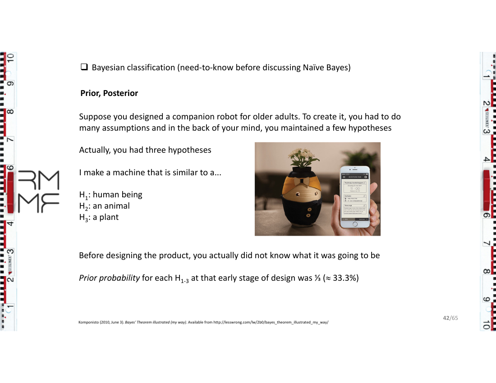
- 贝叶斯分类（Bayesian classification）（在讨论朴素贝叶斯（Naïve Bayes）之前需要了解的内容）
Komponisto (2010, June 3). Bayes' Theorem illustrated (my way). Available from http://lesswrong.com/lw/2b0/bayes_theorem_illustrated_my_way/
假设你为老年人设计了一款陪伴机器人。为了制造它，你必须做出许多假定（assumptions），并且在内心深处保留了几个假设（hypotheses）。
实际上，你有三个假设（hypotheses）：
我制造了一台类似于……的机器：
- H1：人类
- H2：动物
- H3：植物
先验（Prior）、后验（Posterior）
在设计产品之前，你其实并不知道它会是什么样子。
在设计的早期阶段，H1–3 中每一个的先验概率（Prior probability）都是 1/3（33.3%）。
英文检索原文（公式与版式请看左侧原图）
Bayesian classification (need-to-know before discussing Naïve Bayes) Komponisto (2010, June 3). Bayes' Theorem illustrated (my way). Available from http://lesswrong.com/lw/2b0/bayes_theorem_illustrated_my_way/ Suppose you designed a companion robot for older adults. To create it, you had to do many assumptions and in the back of your mind, you maintained a few hypotheses Actually, you had three hypotheses I make a machine that is similar to a... H1: human being H2: an animal H3: a plant Prior, Posterior Before designing the product, you actually did not know what it was going to be Prior probability for each H1-3 at that early stage of design was ⅓ (33.3%) 42/65

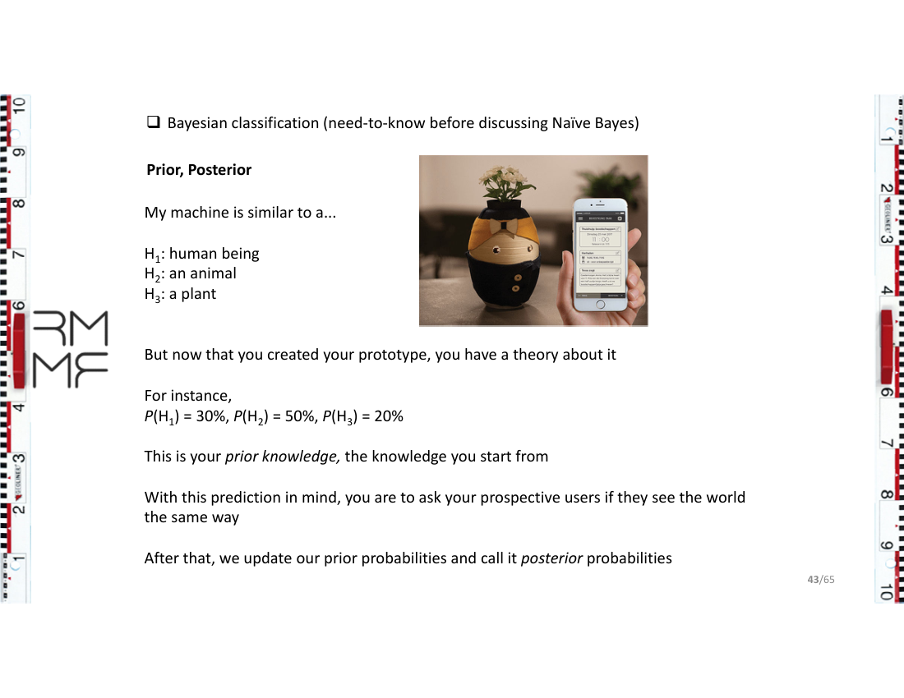
- 贝叶斯分类（Bayesian classification）（在讨论朴素贝叶斯（Naïve Bayes）之前需要了解的内容）
我的机器类似于……
- H1：人类
- H2：动物
- H3：植物
但现在你已经做出了自己的原型，于是对它有了一个理论（theory）。
例如：
P(H1) = 30%，P(H2) = 50%，P(H3) = 20%
这就是你的先验知识（prior knowledge），也就是你出发时的知识基础。
带着这个预测（prediction），你要去询问潜在用户，看看他们是否也以同样的方式看待这个世界。
之后，我们更新我们的先验概率（prior probabilities），并将其称为后验概率（posterior probabilities）。
先验（Prior）、后验（Posterior）
英文检索原文（公式与版式请看左侧原图）
Bayesian classification (need-to-know before discussing Naïve Bayes) My machine is similar to a... H1: human being H2: an animal H3: a plant But now that you created your prototype, you have a theory about it For instance, P(H1) = 30%, P(H2) = 50%, P(H3) = 20% This is your prior knowledge, the knowledge you start from With this prediction in mind, you are to ask your prospective users if they see the world the same way After that, we update our prior probabilities and call it posterior probabilities Prior, Posterior 43/65

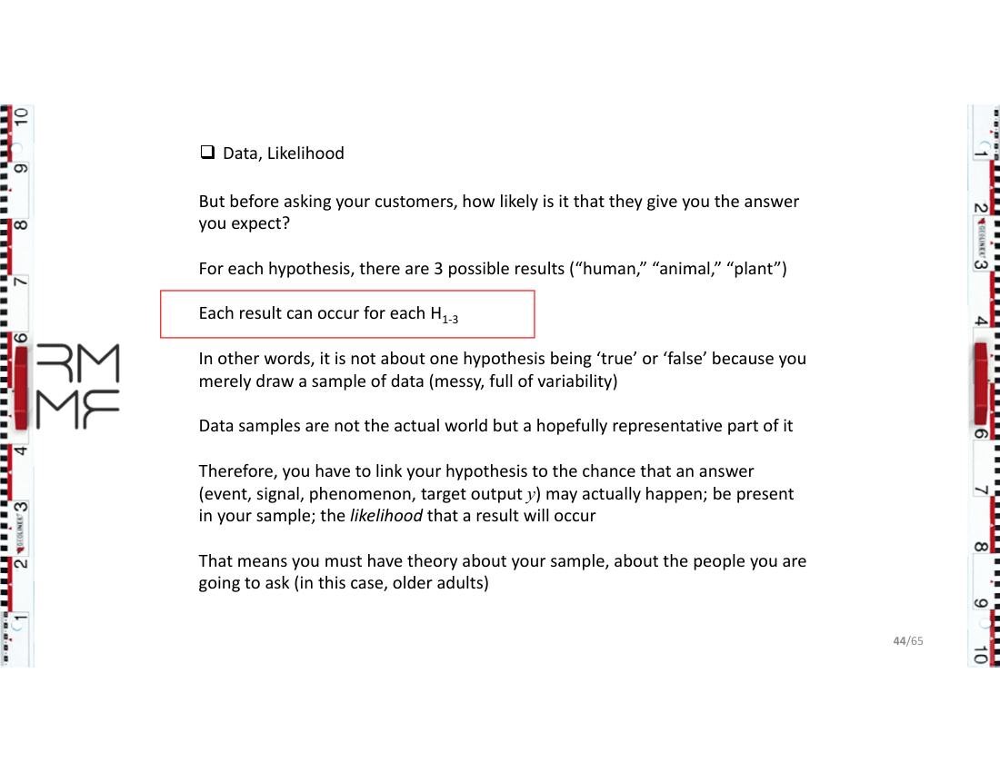
- 数据（Data）、似然（Likelihood）
但在询问你的客户之前，他们给出你所期望答案的可能性有多大？
对于每一个假设（hypothesis），都有 3 种可能的结果（“人类”、“动物”、“植物”）。
每一种结果都可能在 H1–3 中的任意一个下发生。
换句话说，这并不是关于某个假设（hypothesis）是“真”还是“假”，因为你只是抽取了一个数据样本（sample of data）（杂乱、充满变异性（variability））。
数据样本（Data samples）并不是真实世界本身，而只是其中有希望具有代表性（representative）的一部分。
因此，你必须将你的假设（hypothesis）与某个回答（事件、信号、现象、目标输出 y（target output y））实际发生、并出现在你样本（sample）中的机会联系起来；也就是某个结果将会出现的似然（likelihood）。
这意味着你必须对你的样本（sample）、对你打算询问的人群（在本例中为老年人）拥有理论（theory）。
英文检索原文（公式与版式请看左侧原图）
Data, Likelihood But before asking your customers, how likely is it that they give you the answer you expect? For each hypothesis, there are 3 possible results (“human,” “animal,” “plant”) Each result can occur for each H1-3 In other words, it is not about one hypothesis being ‘true’ or ‘false’ because you merely draw a sample of data (messy, full of variability) Data samples are not the actual world but a hopefully representative part of it Therefore, you have to link your hypothesis to the chance that an answer (event, signal, phenomenon, target output y) may actually happen; be present in your sample; the likelihood that a result will occur That means you must have theory about your sample, about the people you are going to ask (in this case, older adults) 44/65

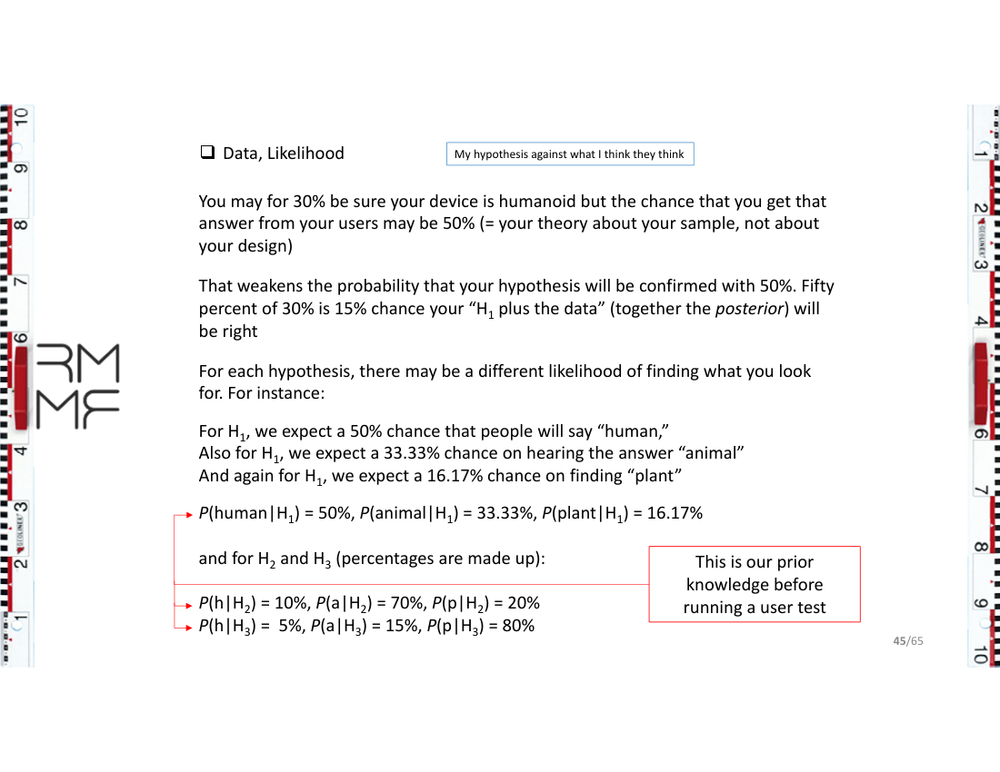
- 数据（Data）、似然（Likelihood）
你也许有 30% 的把握认为你的设备是类人的，但你从用户那里得到这个回答的机会可能是 50%（= 你关于样本（sample）的理论（theory），而不是关于你设计的理论）。
这会将你的假设（hypothesis）得到证实的概率（probability）削弱为原来的 50%。30% 的 50% 就是 15% 的机会，即你的“H1 加上数据（data）”（合起来就是后验（posterior））是正确的。
对于每一个假设（hypothesis），找到你所寻找结果的似然（likelihood）可能都不同。例如：
- 对于 H1，我们预期有 50% 的机会人们会说“人类”，
- 同样对于 H1，我们预期有 33.33% 的机会听到“动物”的回答，
- 还是对于 H1，我们预期有 16.17% 的机会得到“植物”的结果：
P(human|H1) = 50%，P(animal|H1) = 33.33%，P(plant|H1) = 16.17%
- 而对于 H2 和 H3（百分比为编造的示例）：
P(h|H2) = 10%，P(a|H2) = 70%，P(p|H2) = 20%P(h|H3) = 5%，P(a|H3) = 15%，P(p|H3) = 80%
（图注）
- 这是我们在运行用户测试（user test）之前的先验知识（prior knowledge）
- 我的假设（hypothesis） vs 我认为他们所想的内容
英文检索原文（公式与版式请看左侧原图）
You may for 30% be sure your device is humanoid but the chance that you get that answer from your users may be 50% (= your theory about your sample, not about your design) That weakens the probability that your hypothesis will be confirmed with 50%. Fifty percent of 30% is 15% chance your “H1 plus the data” (together the posterior) will be right For each hypothesis, there may be a different likelihood of finding what you look for. For instance: For H1, we expect a 50% chance that people will say “human,” Also for H1, we expect a 33.33% chance on hearing the answer “animal” And again for H1, we expect a 16.17% chance on finding “plant” P(human|H1) = 50%, P(animal|H1) = 33.33%, P(plant|H1) = 16.17% and for H2 and H3 (percentages are made up): P(h|H2) = 10%, P(a|H2) = 70%, P(p|H2) = 20% P(h|H3) = 5%, P(a|H3) = 15%, P(p|H3) = 80% Data, Likelihood This is our prior knowledge before running a user test My hypothesis against what I think they think 45/65

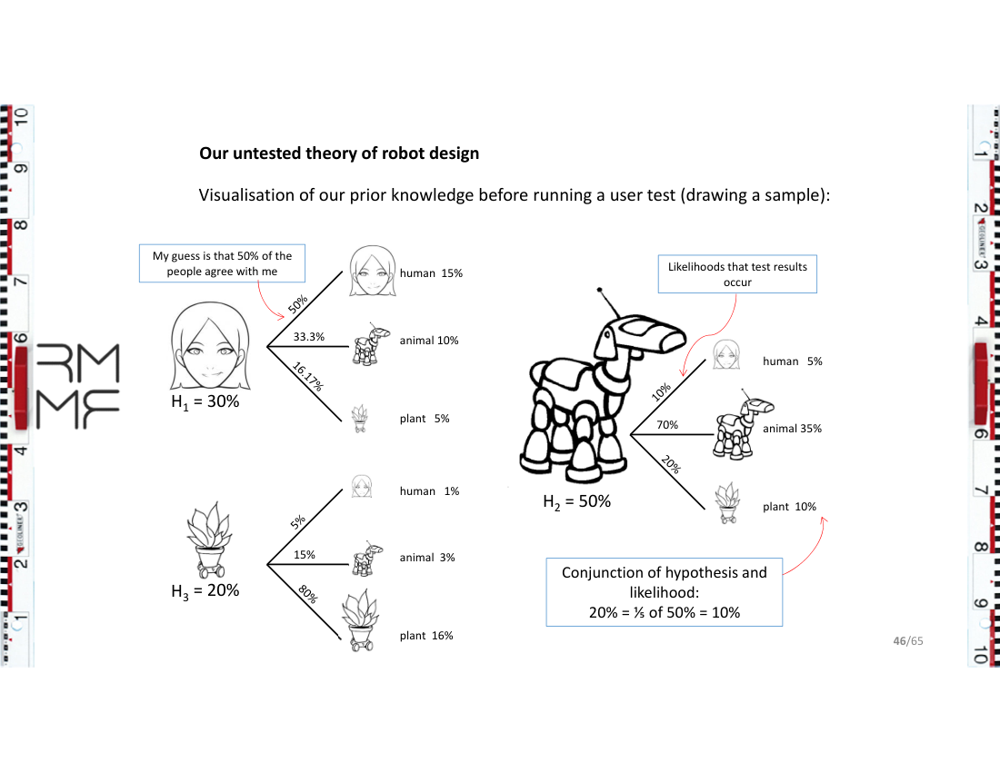
运行用户测试（user test）（抽取样本（drawing a sample））之前我们先验知识（prior knowledge）的可视化：
我们未经检验的机器人设计理论（theory）
H1 = 30%H2 = 50%H3 = 20%
各假设（hypothesis）与测试结果发生的似然（Likelihoods）及联合分布：
- （对应 H1）
33.3%- 人类（human）：
15% - 动物（animal）：
10% - 植物（plant）：
5%
- 人类（human）：
- （对应 H3）
15%- 人类（human）：
1% - 动物（animal）：
3% - 植物（plant）：
16%
- 人类（human）：
- （对应 H2）
70%- 人类（human）：
5% - 动物（animal）：
35% - 植物（plant）：
10%
- 人类（human）：
图示标注：
- 测试结果发生的似然（Likelihoods）
- 假设（hypothesis）与似然（likelihood）的合取（Conjunction）：
20% = 50% 的 1/5 = 10% - 我的猜测是 50% 的人同意我的看法
英文检索原文（公式与版式请看左侧原图）
Visualisation of our prior knowledge before running a user test (drawing a sample): Our untested theory of robot design H1 = 30% H2 = 50% H3 = 20% 33.3% human 15% animal 10% plant 5% 15% human 1% animal 3% plant 16% 70% human 5% animal 35% plant 10% Likelihoods that test results occur Conjunction of hypothesis and likelihood: 20% = ⅕ of 50% = 10% My guess is that 50% of the people agree with me 46/65

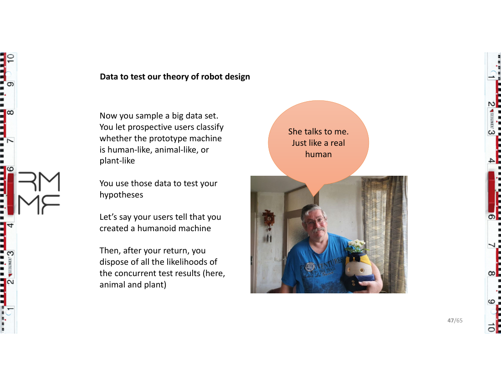
用于检验（test）我们机器人设计理论（theory）的数据（Data）
现在你采样（sample）一个大型数据集（data set）。
你让潜在用户对原型机器进行分类（classify），判断它是类人的、类动物的还是类植物的。
你使用这些数据（data）来检验（test）你的假设（hypotheses）。
假设你的用户告诉你，你创造了一台类人机器。
然后，在你回来之后，你丢弃所有并存测试结果（concurrent test results）（这里是动物和植物）的似然（likelihoods）。
（插图对话）
- “她会和我说话。就像一个真正的人类一样。”
英文检索原文（公式与版式请看左侧原图）
Now you sample a big data set. You let prospective users classify whether the prototype machine is human-like, animal-like, or plant-like You use those data to test your hypotheses Let’s say your users tell that you created a humanoid machine Then, after your return, you dispose of all the likelihoods of the concurrent test results (here, animal and plant) Data to test our theory of robot design She talks to me. Just like a real human 47/65

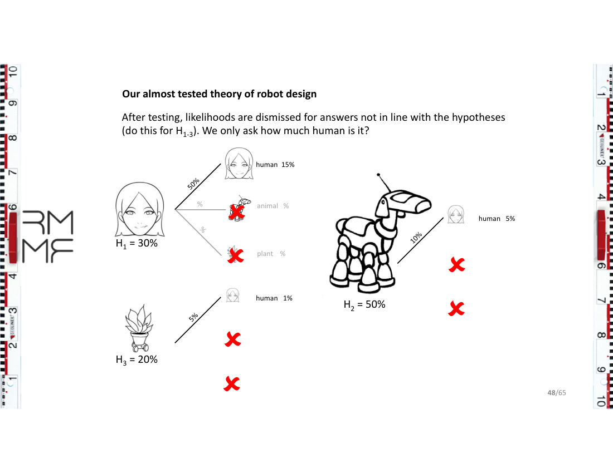
我们几乎检验完成的机器人设计理论（theory）
在检验（testing）之后，剔除与假设（hypotheses）不一致的回答所对应的似然（likelihoods）（对 H1–3 都这样做）。我们只问：它在多大程度上是“人类”？
H1 = 30%H2 = 50%H3 = 20%
（各列保留与剔除情况）
- 人类（human）：
15%| 人类（human）：1%| 人类（human）：5% %- 动物（animal）：
%（✗、✗、✗） - 植物（plant）：
%（✗、✗、✗）
英文检索原文（公式与版式请看左侧原图）
After testing, likelihoods are dismissed for answers not in line with the hypotheses (do this for H1-3). We only ask how much human is it? Our almost tested theory of robot design H1 = 30% H2 = 50% H3 = 20% human 15% human 1% human 5% % animal % plant % 48/65

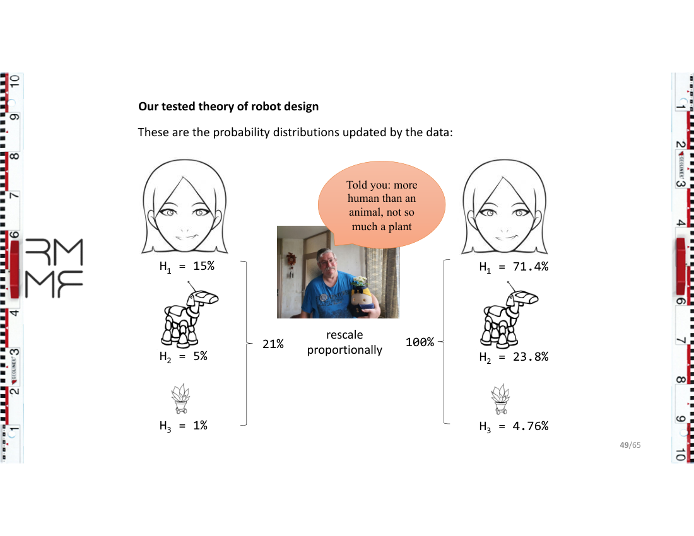
我们已经过检验（tested）的机器人设计理论（theory）
这些是由数据（data）更新后的概率分布（probability distributions）：
- 更新前（未归一化）：
H1 = 15%H2 = 5%H3 = 1%- 合计：
21%
- 按比例重新缩放（rescale proportionally） → 合计：
100%
- 更新后（后验（posterior））：
H1 = 71.4%H2 = 23.8%H3 = 4.76%
（插图旁白）
- “早就跟你说过：更像人类而不是动物，不太像植物。”
英文检索原文（公式与版式请看左侧原图）
These are the probability distributions updated by the data: H1 = 15% H2 = 5% H3 = 1% H1 = 71.4% H2 = 23.8% H3 = 4.76% 21% 100% rescale proportionally Our tested theory of robot design Told you: more human than an animal, not so much a plant 49/65

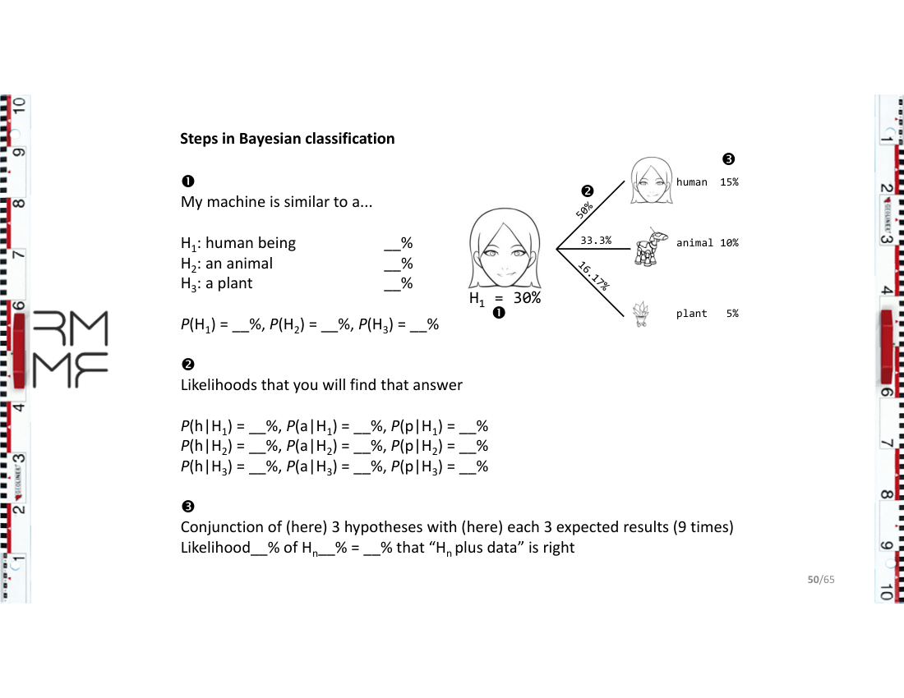
贝叶斯分类（Bayesian classification）的步骤
我的机器类似于……
- H1：人类
__% - H2：动物
__% - H3：植物
__% P(H1) = __%，P(H2) = __%，P(H3) = __%
你将找到该回答的似然（Likelihoods）：
P(h|H1) = __%，P(a|H1) = __%，P(p|H1) = __%P(h|H2) = __%，P(a|H2) = __%，P(p|H2) = __%P(h|H3) = __%，P(a|H3) = __%，P(p|H3) = __%
（此处）3 个假设（hypotheses）与（此处）各自 3 个预期结果的合取（Conjunction）（共 9 次）：
Hn占__%的似然（Likelihood）__%= “Hn加上数据（data）”为正确的概率__%
示例块：
H1 = 30%33.3%- 人类（human）：
15% - 动物（animal）：
10% - 植物（plant）：
5%
英文检索原文（公式与版式请看左侧原图）
Steps in Bayesian classification My machine is similar to a... H1: human being __% H2: an animal __% H3: a plant __% P(H1) = __%, P(H2) = __%, P(H3) = __% Likelihoods that you will find that answer P(h|H1) = __%, P(a|H1) = __%, P(p|H1) = __% P(h|H2) = __%, P(a|H2) = __%, P(p|H2) = __% P(h|H3) = __%, P(a|H3) = __%, P(p|H3) = __% Conjunction of (here) 3 hypotheses with (here) each 3 expected results (9 times) Likelihood__% of Hn__% = __% that “Hnplus data” is right H1 = 30% 33.3% human 15% animal 10% plant 5% 50/65

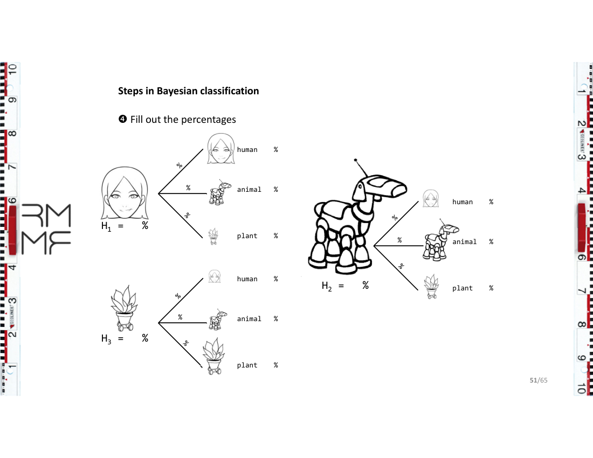
贝叶斯分类（Bayesian classification）的步骤
填写百分比：
H1 = %H2 = %H3 = %
第一列：
%- 人类（human）：
% - 动物（animal）：
% - 植物（plant）：
%
第二列：
%- 人类（human）：
% - 动物（animal）：
% - 植物（plant）：
%
第三列：
%- 人类（human）：
% - 动物（animal）：
% - 植物（plant）：
%
英文检索原文（公式与版式请看左侧原图）
Fill out the percentages H1 = % H2 = % H3 = % % human % animal % plant % % human % animal % plant % % human % animal % plant % Steps in Bayesian classification 51/65

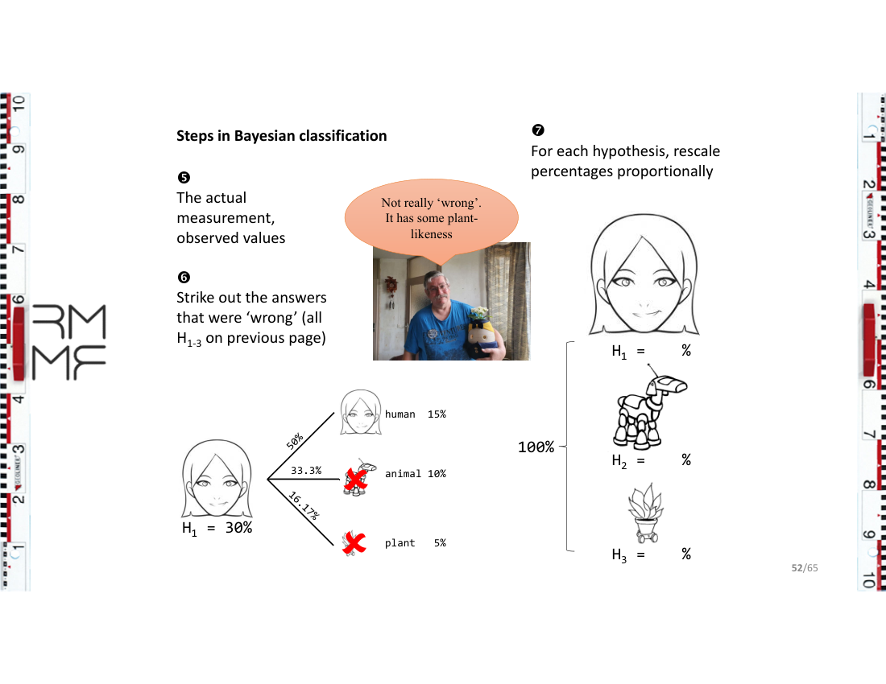
贝叶斯分类（Bayesian classification）的步骤
实际测量（actual measurement）、观测值（observed values）：
划掉“错误”的回答（上一页中的所有 H1–3）：
H1 = 30%33.3%- 人类（human）：
15% - 动物（animal）：
10%✗ - 植物（plant）：
5%✗
对于每一个假设（hypothesis），按比例重新缩放（rescale ... proportionally）百分比：
H1 = %H2 = %H3 = %- 合计：
100%
（插图旁白）
- “其实也不算真正意义上的‘错’。它确实有一点像植物的地方。”
英文检索原文（公式与版式请看左侧原图）
The actual measurement, observed values Strike out the answers that were ‘wrong’ (all H1-3 on previous page) H1 = 30% 33.3% human 15% animal 10% plant 5% For each hypothesis, rescale percentages proportionally H1 = % H2 = % H3 = % 100% Steps in Bayesian classification Not really ‘wrong’. It has some plant- likeness 52/65

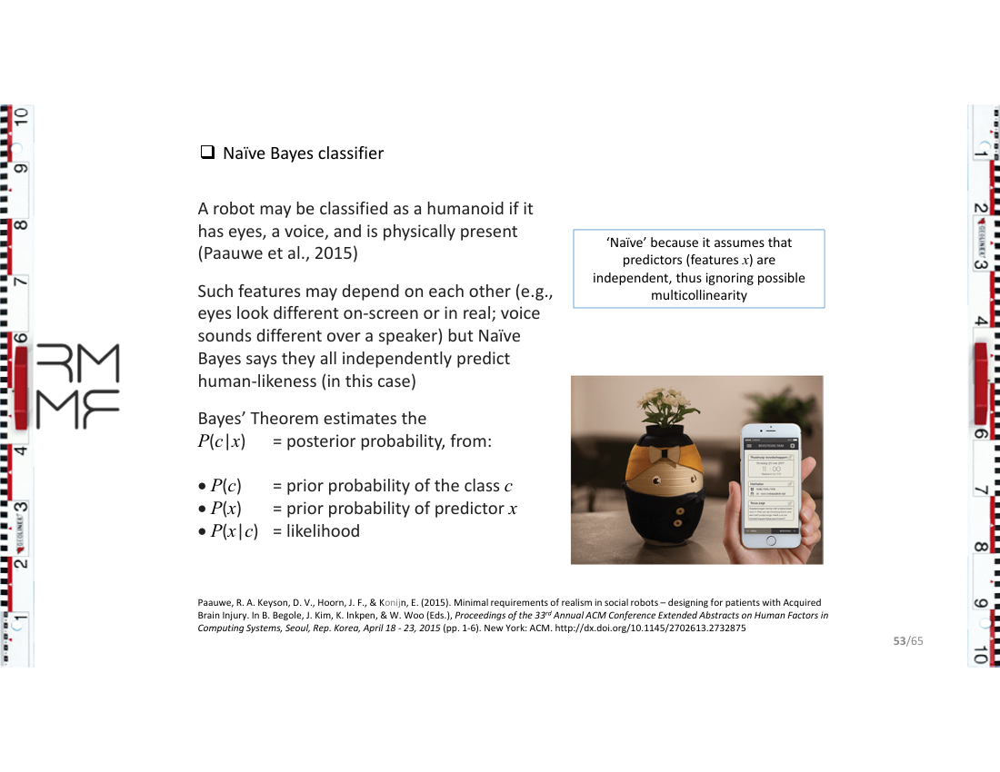
朴素贝叶斯分类器（Naïve Bayes classifier）
- 之所以称为「朴素（Naïve）」，是因为它假定各预测变量（predictors）（特征（features） x）相互独立（independent），从而忽略了可能存在的多重共线性（multicollinearity）
- 如果一个机器人拥有眼睛、声音并且是物理实体存在，它就可能被归类为类人型（humanoid）（Paauwe et al., 2015）
- 这些特征（features）彼此之间可能相互依赖（例如，眼睛在屏幕上与在现实中看起来不同；声音通过扬声器播放听起来也不同），但朴素贝叶斯（Naïve Bayes）认为它们（在此案例中）都是各自独立地预测类人程度（human-likeness）
- 贝叶斯定理（Bayes’ Theorem）根据以下各项估计
P(c|x)（即后验概率（posterior probability））：P(c)= 类别（class） c 的先验概率（prior probability）P(x)= 预测变量（predictor） x 的先验概率（prior probability）P(x|c)= 似然（likelihood）
参考文献（References）
Paauwe, R. A. Keyson, D. V., Hoorn, J. F., & Konijn, E. (2015). Minimal requirements of realism in social robots – designing for patients with Acquired Brain Injury. In B. Begole, J. Kim, K. Inkpen, & W. Woo (Eds.), Proceedings of the 33rd Annual ACM Conference Extended Abstracts on Human Factors in Computing Systems, Seoul, Rep. Korea, April 18 - 23, 2015 (pp. 1-6). New York: ACM. http://dx.doi.org/10.1145/2702613.2732875
英文检索原文（公式与版式请看左侧原图）
‘Naïve’ because it assumes that predictors (features x) are independent, thus ignoring possible multicollinearity Naïve Bayes classifier A robot may be classified as a humanoid if it has eyes, a voice, and is physically present (Paauwe et al., 2015) Such features may depend on each other (e.g., eyes look different on-screen or in real; voice sounds different over a speaker) but Naïve Bayes says they all independently predict human-likeness (in this case) Bayes’ Theorem estimates the P(c|x) = posterior probability, from: P(c) = prior probability of the class c P(x) = prior probability of predictor x P(x|c) = likelihood Paauwe, R. A. Keyson, D. V., Hoorn, J. F., & Konijn, E. (2015). Minimal requirements of realism in social robots – designing for patients with Acquired Brain Injury. In B. Begole, J. Kim, K. Inkpen, & W. Woo (Eds.), Proceedings of the 33rd Annual ACM Conference Extended Abstracts on Human Factors in Computing Systems, Seoul, Rep. Korea, April 18 - 23, 2015 (pp. 1-6). New York: ACM. http://dx.doi.org/10.1145/2702613.2732875 53/65

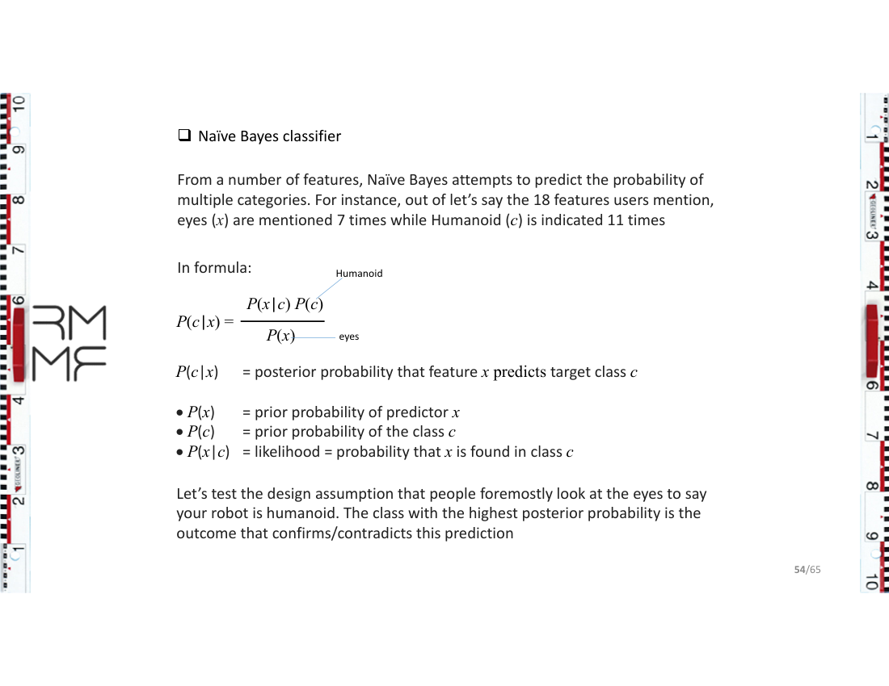
朴素贝叶斯分类器（Naïve Bayes classifier）
- 朴素贝叶斯（Naïve Bayes）试图根据若干特征（features）来预测多个类别（categories）的概率（probability）。例如，假设在用户提到的 18 个特征中，眼睛（eyes, x）被提到 7 次，而类人型（Humanoid, c）被指认为 11 次
用公式表示为（此处以 Humanoid 对应 c，eyes 对应 x）：
P(c|x) = P(x|c) P(c) / P(x)
P(c|x)= 特征（feature） x 预测目标类别（target class） c 的后验概率（posterior probability）P(x)= 预测变量（predictor） x 的先验概率（prior probability）P(c)= 类别（class） c 的先验概率（prior probability）P(x|c)= 似然（likelihood） = x 出现在类别（class） c 中的概率（probability）
让我们来检验这样一个设计假设（design assumption）：人们主要通过看眼睛来判断你的机器人是否属于类人型（humanoid）。具有最高后验概率（posterior probability）的类别（class）就是证实或反驳这一预测（prediction）的结果。
英文检索原文（公式与版式请看左侧原图）
Naïve Bayes classifier From a number of features, Naïve Bayes attempts to predict the probability of multiple categories. For instance, out of let’s say the 18 features users mention, eyes (x) are mentioned 7 times while Humanoid (c) is indicated 11 times P(c|x) = posterior probability that feature x predicts target class c P(x) = prior probability of predictor x P(c) = prior probability of the class c P(x|c) = likelihood = probability that x is found in class c P(c|x) = P(x) P(x|c) P(c) In formula: Humanoid eyes Let’s test the design assumption that people foremostly look at the eyes to say your robot is humanoid. The class with the highest posterior probability is the outcome that confirms/contradicts this prediction 54/65

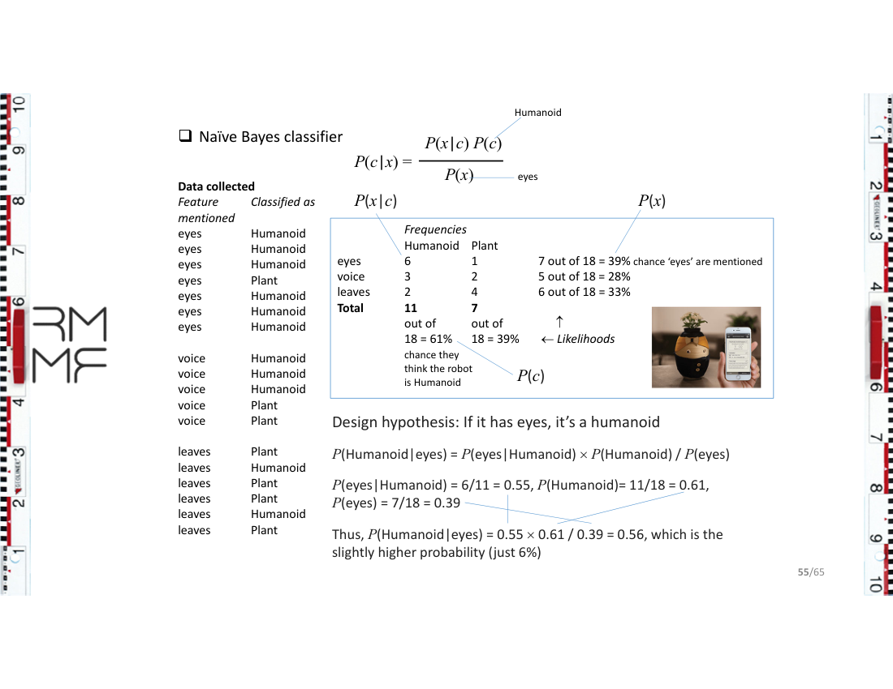
朴素贝叶斯分类器（Naïve Bayes classifier）
P(c|x) = P(x|c) P(c) / P(x)（此处 c 为 Humanoid，x 为 eyes）
收集的数据（Data collected）
| 提及的特征（Feature mentioned） | 归类为（Classified as） |
|---|---|
| eyes | Humanoid |
| eyes | Humanoid |
| eyes | Humanoid |
| eyes | Plant |
| eyes | Humanoid |
| eyes | Humanoid |
| eyes | Humanoid |
| voice | Humanoid |
| voice | Humanoid |
| voice | Humanoid |
| voice | Plant |
| voice | Plant |
| leaves | Plant |
| leaves | Humanoid |
| leaves | Plant |
| leaves | Plant |
| leaves | Humanoid |
| leaves | Plant |
频数（Frequencies）（内部单元格对应似然（Likelihoods） P(x|c)，右侧列对应 P(x)，底行合计对应 P(c)）
| 特征 | Humanoid | Plant | P(x) |
|---|---|---|---|
| eyes | 6 | 1 | 18 次中占 7 次 = 39% 概率提及「eyes」 |
| voice | 3 | 2 | 18 次中占 5 次 = 28% |
| leaves | 2 | 4 | 18 次中占 6 次 = 33% |
| 总计（Total） | 18 次中占 11 次 = 61%（认为机器人是 Humanoid 的概率） | 18 次中占 7 次 = 39% | P(c) |
- 设计假设（Design hypothesis）：如果它有眼睛，它就是类人型（humanoid）
P(Humanoid|eyes) = P(eyes|Humanoid) × P(Humanoid) / P(eyes)P(eyes|Humanoid) = 6/11 = 0.55，P(Humanoid) = 11/18 = 0.61，P(eyes) = 7/18 = 0.39- 因此，
P(Humanoid|eyes) = 0.55 × 0.61 / 0.39 = 0.56，这是略高一点的概率（probability）（仅高出 6%） - 设计假设（Design hypothesis）：如果它有眼睛，它就是类人型（humanoid）
英文检索原文（公式与版式请看左侧原图）
Naïve Bayes classifier P(c|x) = P(x) P(x|c) P(c) Humanoid eyes Data collected Feature Classified as mentioned eyes Humanoid eyes Humanoid eyes Humanoid eyes Plant eyes Humanoid eyes Humanoid eyes Humanoid voice Humanoid voice Humanoid voice Humanoid voice Plant voice Plant leaves Plant leaves Humanoid leaves Plant leaves Plant leaves Humanoid leaves Plant Frequencies Humanoid Plant eyes 6 1 7 out of 18 = 39% chance ‘eyes’ are mentioned voice 3 2 5 out of 18 = 28% leaves 2 4 6 out of 18 = 33% Total 11 7 out of out of 18 = 61% 18 = 39% Likelihoods chance they think the robot is Humanoid P(x|c) P(x) P(c) Design hypothesis: If it has eyes, it’s a humanoid P(Humanoid|eyes) = P(eyes|Humanoid) P(Humanoid) / P(eyes) P(eyes|Humanoid) = 6/11 = 0.55, P(Humanoid)= 11/18 = 0.61, P(eyes) = 7/18 = 0.39 Thus, P(Humanoid|eyes) = 0.55 0.61 / 0.39 = 0.56, which is the slightly higher probability (just 6%) Design hypothesis: If it has eyes, it’s a humanoid 55/65

贝叶斯独立样本推断（Bayesian Independent-Sample Inference）
- 在 SPSS 中进行贝叶斯 t 检验（Bayesian t-test），点击：
Analyze（分析）> Bayesian Statistics（贝叶斯统计）> Independent Samples Normal（独立样本正态） - 定义分组变量（grouping variable）的取值（例如，With-Without AI，有 AI 与无 AI）
- 在 Bayesian Analysis（贝叶斯分析）选框中，勾选 Use Both Methods（同时使用两种方法）：这将为你提供后验分布（posterior distribution）和贝叶斯因子（Bayes factor）
英文检索原文（公式与版式请看左侧原图）
Bayesian Independent-Sample Inference For a Bayesian t-test in SPSS, click: Analyze > Bayesian Statistics > Independent Samples Normal Define the values of the grouping variable (e.g., With-Without AI) In the Bayesian Analysis box, tick Use Both Methods: Gives you posterior distribution and Bayes factor 56/65

考试样题（类别：「洞察」 / Exam Sample Item (Category “Insight”)）
- 开放式问题（Open-ended question）
假设通过朴素贝叶斯（Naïve Bayes）估计，用户仅根据眼睛就假定机器人属于类人型（Humanoid）的概率（probability）为 56%：P(Humanoid|eyes) = 0.56
鉴于 50%-50% 意味着最大不确定性（uncertainty），这对于决策的置信度（confidence）意味着什么？
- 图表说明：横轴为
P(Humanoid|eyes)（范围 0 至 1，中间为 ½，标出56%的位置），纵轴为不确定性（Uncertainty）（0 至 1，在 ½ 处达到最高） - 答案（Answer）：（待作答）
提示（Tip）：简明且精确地回答开放式问题。不要写长篇大论让老师去翻找正确答案——那说明你其实不知道，而且那样不会给你得分。
英文检索原文（公式与版式请看左侧原图）
Suppose that, estimated with Naïve Bayes, the probability that users assume a robot to be Humanoid based on the eyes alone is 56%: P(Humanoid|eyes) = 0.56 What does that mean in terms of confidence in the decision, given that 50- 50% means maximum uncertainty? Exam Sample Item (Category “Insight”) Open-ended question 0 1 1 ½ ½ Uncertainty P(Humanoid|eyes) Answer Tip: Answer open questions concisely and precisely. Do not write long essays so that your teacher has to look for the right answer. That means you do not know and that does not earn you points 56% 57/65

考试样题（类别：「洞察」 / Exam Sample Item (Category “Insight”)）
- 开放式问题（Open-ended question）
假设通过朴素贝叶斯（Naïve Bayes）估计，用户仅根据眼睛就假定机器人属于类人型（Humanoid）的概率（probability）为 56%：P(Humanoid|eyes) = 0.56
鉴于 50%-50% 意味着最大不确定性（uncertainty），这对于决策的置信度（confidence）意味着什么？
- 图表标注：
- 横轴为
P(Humanoid|eyes)（0 处标为「不是类人型（not Humanoid）」，½ 处标为「不知道（don’t know）| 最大不确定性（Maximal uncertainty）」，1 处标为「肯定是类人型（definitely Humanoid）」，并标出56%） - 纵轴为不确定性（Uncertainty）（0 至 1）
- 横轴为
- 答案（Answer）：
- 当
P = 0%（不是 Humanoid）或P = 100%（肯定是 Humanoid）时，对决策没有任何疑问，因此不确定性（uncertainty） = 0。当P = 56%时，不确定性（uncertainty）几乎处于最大值（½ = 50%），因此判定为 Humanoid 的决策非常存疑。
- 当
英文检索原文（公式与版式请看左侧原图）
Suppose that, estimated with Naïve Bayes, the probability that users assume a robot to be Humanoid based on the eyes alone is 56%: P(Humanoid|eyes) = 0.56 What does that mean in terms of confidence in the decision, given that 50- 50% means maximum uncertainty? Exam Sample Item (Category “Insight”) Open-ended question 0 1 1 ½ ½ Uncertainty P(Humanoid|eyes) Answer When P = 0% (not Humanoid) or P = 100% (definitely Humanoid), there is no doubt about the decision, so uncertainty = 0. With P = 56%, uncertainty is almost at its maximum (½ = 50%) so the decision for Humanoid is very doubtful not Humanoid definitely Humanoid don’t know | Maximal uncertainty 56% 58/65

总结（∑ummary）—— Socrates
- 大多数研究者认为零假设显著性检验（null-hypotheses significance-testing）无关紧要
- 然而，关于真实与虚拟、人与机器人、人与 AI 之间相似性假设（hypotheses of similarity）正变得越来越重要
- 频率主义分析（Frequentist analysis）不允许直接检验零假设（null hypothesis）
- 频率主义（Frequentists）只能（未能）拒绝零假设（reject the null），而贝叶斯（Bayes）能够同时为零假设（null hypothesis）和备择假设（alternative hypotheses）提供平衡的决策
- 在当代科学中，贝叶斯统计（Bayesian statistics）比频率主义方法（frequentist approaches）更为合适，因为当代科学越来越多地尝试具有理论相关性的零假设检验（H0-testing）
英文检索原文（公式与版式请看左侧原图）
ummary Socrates Most researchers consider null-hypotheses significance-testing irrelevant However, hypotheses of similarity between real and virtual, human and robot, human and AI become increasingly important Frequentist analysis does not allow for directly testing a null hypothesis Frequentists can only (fail to) reject the null, whereas Bayes offers a balanced decision for both the null and alternative hypotheses Bayesian statistics are more appropriate than frequentist approaches for use in contemporary science, which increasingly attempts theoretically relevant H0-testing 59/65

总结（∑ummary）—— Socrates
- 原版图灵测试（Turing Test）存在不足，但经过改编作为诊断工具（diagnostic tool）或用于搭配结构化问卷（structured questionnaires）的实验（experiment）中时则相当有用
- 随着聊天机器人（如 GPT）中不断进步的 AI 以及高保真 CGI（如 DeepFake）的发展，改进后的图灵测试（Turing Tests）不仅在理论上而且在实践上都变得越来越重要
- 每一个关于类人程度（human likeness）、拟人化（anthropomorphism）、仿真（emulation）、人类相对于计算机的优劣性的问题，都应当既使用频率主义统计（frequentist statistics）进行差异检验（tested for difference），也使用贝叶斯（Bayes）进行相似性检验（tested for similarity）
- 媒介等同理论（Media Equation）是理论（theory）（即使在我们揭示其局限性时也是如此），改编版图灵测试（adapted Turing Test）是方法（method），而贝叶斯（Bayes）是分析工具（analysis tool）
英文检索原文（公式与版式请看左侧原图）
ummary Socrates The original version of the Turing Test is wanting but adapted as diagnostic tool or used in an experiment with structured questionnaires quite useful With ever-advancing AI in chatbots (cf. GPT) and high-fidelity CGI (cf. DeepFake), improved Turing Tests become increasingly important not only theoretically but also practically Each question about human likeness, anthropomorphism, emulation, human superiority or inferiority to a computer should be tested for difference with frequentist statistics as well as for similarity, using Bayes Media Equation is the theory (also when we show its limitations), adapted Turing Test the method, and Bayes the analysis tool 60/65

总结（∑ummary）—— Socrates
- 贝叶斯定理（Bayes’ Theorem）的运作方式是从构想关于你的设计的理论（theory）（即先验（the Prior））以及关于你的用户的理论（即似然（the Likelihood））开始。这与所有其他统计方法都不同！后验（The Posterior）是用你实际抽样（sampled）的数据（Data）对先验（the Prior）进行的更新。从这个意义上说，贝叶斯（Bayes）具有「记忆（memory）」，先前的理论不会被立刻全盘抹去
- 朴素贝叶斯分类器（Naïve Bayes classifier）之所以「朴素（naïve）」，是因为它预期预测变量（predictors）（特征（features） x1, …, n）完全独立（independent）（这与多元回归（Multiple Regression）不同）
- 对话框插图：
- 「我是用户（I’m the user）」
- 「我是设计（I’m the design）」
英文检索原文（公式与版式请看左侧原图）
ummary Socrates Bayes’ Theorem works from formulating a theory about your design (the Prior) as well as about your users (the Likelihood). That’s different from all other statistical approaches! The Posterior is an update of the Prior with the actual Data you sampled. In that sense, Bayes has ‘memory’ and earlier theory is not immediately wiped clean The Naïve Bayes classifier is ‘naïve’ because it expects predictors (features x1, …, n) to be fully independent (that’s different from Multiple Regression) I’m the user I’m the design 61/65

总结（∑ummary）
Socrates
- 根据若干特征（features），朴素贝叶斯（Naïve Bayes）尝试预测多个类别（categories）的概率（probability）
- 请谨慎对待你从结果中做出的推断（inference）。例如，当朴素贝叶斯（Naïve Bayes）证实了“如果它有眼睛，它就是类人机器人”这一设计假设（design hypothesis）时，你谈论的是一种在逻辑上属于错误（尽管是一种真实体验）的用户感知（user perception）
- 人类有眼睛，但并非所有眼睛都表明是人类
- 眼睛也可能表明是各种动物，而且请注意，并非所有类人机器人都有眼睛
- A → B：人类有眼睛
- A：人类
- → B：那么有眼睛
而不是（Not）：
- A → B：人类有眼睛
- B：眼睛
- → A：那么是人类
严格来说，朴素贝叶斯（Naïve Bayes）进行的是肯定后件推理（ex-consequentia reasoning）
- 没有眼睛（No eyes）
英文检索原文（公式与版式请看左侧原图）
ummary Socrates From a number of features, Naïve Bayes attempts to predict the probability of multiple categories Be careful about the inference you do from the results. For instance, when Naïve Bayes confirms the design hypothesis that “If it has eyes, it’s a humanoid”, you are talking about a user perception that logically is a mistake (although a genuine experience) Humans have eyes but not all eyes indicate humans Eyes may indicate all kinds of animals too and mind you, not all humanoid robots have eyes A B Humans have eyes A Human B Then eyes Not: A B Humans have eyes B Eyes A Then human Strictly speaking, Naïve Bayes does ex-consequentia reasoning No eyes 62/65

答疑课（Response session）
- 提前三天，把你们仍然存在的问题写信发给我，我会在课堂上再次讲解。这意味着你们已经学完了全部内容，因此你们的问题是具体且有针对性的
- 现在正是询问哪些是主要内容、哪些是旁白补充的时候。哪些被视为真正重要的内容，哪些只是小插曲。不要错过这个机会
- 我们还会进行一次模拟考试，让你们熟悉题型风格
- 你（you）
- 我（me）
- johan.f.hoorn@polyu.edu.hk
英文检索原文（公式与版式请看左侧原图）
Response session: Three days in advance, you write to me the issues that you still have, which I will explain again in class. That means you already studied everything so that your questions are specific and informed This is the time to ask what is main content and what are asides. What is regarded as really important and what are little sidesteps. Don’t miss that opportunity We will also do a test exam to let you get used to the style of questions you me johan.f.hoorn@polyu.edu.hk 63/65

参考文献 1（References 1）
- Edwards, C., Edwards, A., Spence, P. R., & Shelton, A. K. (2014). Is that a bot running the social media feed? Testing the differences in perceptions of communication quality for a human agent and a bot agent on twitter. Computers in Human Behavior, 33, 372-376.
- Feigenbaum, E. A. (2003) Some challenges and grand challenges for computational intelligence. Journal of the Association for Computing Machinery, 50, 32-40.
- French, R. M. (2000). The Turing test: the first 50 years. Trends in Cognitive Science, 4, 115–122.
- Jeffreys, H. (1961). Theory of probability (3rd ed.). Oxford, UK: Oxford University.
- Konijn, E. A., Van de Schoot, R., Winter, S., & Ferguson, C. J. (2015). Possible solution to publication bias through Bayesian statistics, including proper null hypothesis testing. Communication Methods and Measures, 9(4), 280-302. doi:10.1080/19312458.2015.1096332.
- Lee, M. D., & Wagenmakers, E.-J. (2013). Bayesian modeling for cognitive science: a practical course. New York: Cambridge University.
英文检索原文（公式与版式请看左侧原图）
References 1 Edwards, C., Edwards, A., Spence, P. R., & Shelton, A. K. (2014). Is that a bot running the social media feed? Testing the differences in perceptions of communication quality for a human agent and a bot agent on twitter. Computers in Human Behavior, 33, 372-376. Feigenbaum, E. A. (2003) Some challenges and grand challenges for computational intelligence. Journal of the Association for Computing Machinery, 50, 32-40. French, R. M. (2000). The Turing test: the first 50 years. Trends in Cognitive Science, 4, 115–122. Jeffreys, H. (1961). Theory of probability (3rd ed.). Oxford, UK: Oxford University. Konijn, E. A., Van de Schoot, R., Winter, S., & Ferguson, C. J. (2015). Possible solution to publication bias through Bayesian statistics, including proper null hypothesis testing. Communication Methods and Measures, 9(4), 280-302. doi:10.1080/19312458.2015.1096332. Lee, M. D., & Wagenmakers, E.-J. (2013). Bayesian modeling for cognitive science: a practical course. New York: Cambridge University. 64/65

参考文献 2（References 2）
- Mou, Y., & Xu, K. (2017). The media inequality: Comparing the initial human-human and human-AI social interactions. Computers in Human Behavior, 72, 432-440.
- Pontier, M. A., & Hoorn, J. F. (2013). How women think robots perceive them – as if robots were men. Proceedings of the 5th International Conference on Agents and Artificial Intelligence, ICAART’13, February 15-18, 2013, Barcelona, Spain (pp. 496-504). Berlin, Heidelberg, GE: Springer.
- Van de Schoot, R., & Depaoli, S. (2014). Bayesian analyses: Where to start and what to report. European Health Psychologist, 16(2), 75-84.
- Van Vugt, H. C., Hoorn, J. F., & Konijn, E. A. (2009). Interactive engagement with embodied agents: An empirically validated framework. Computer Animation and Virtual Worlds, 20, 195-204. doi:10.1002/cav.312
- Von Ahn, L., Blum, M., & Langford, J. (2004). Telling humans and computers apart automatically. Communications of the ACM, 47, 56-60.
英文检索原文（公式与版式请看左侧原图）
References 2 Mou, Y., & Xu, K. (2017). The media inequality: Comparing the initial human-human and human-AI social interactions. Computers in Human Behavior, 72, 432-440. Pontier, M. A., & Hoorn, J. F. (2013). How women think robots perceive them – as if robots were men. Proceedings of the 5th International Conference on Agents and Artificial Intelligence, ICAART’13, February 15-18, 2013, Barcelona, Spain (pp. 496-504). Berlin, Heidelberg, GE: Springer. Van de Schoot, R., & Depaoli, S. (2014). Bayesian analyses: Where to start and what to report. European Health Psychologist, 16(2), 75-84. Van Vugt, H. C., Hoorn, J. F., & Konijn, E. A. (2009). Interactive engagement with embodied agents: An empirically validated framework. Computer Animation and Virtual Worlds, 20, 195- 204. doi:10.1002/cav.312 Von Ahn, L., Blum, M., & Langford, J. (2004). Telling humans and computers apart automatically. Communications of the ACM, 47, 56-60. 65/65